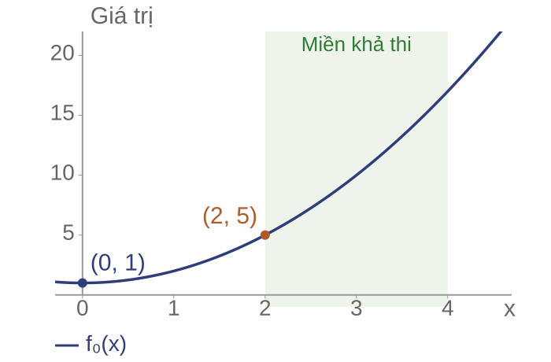
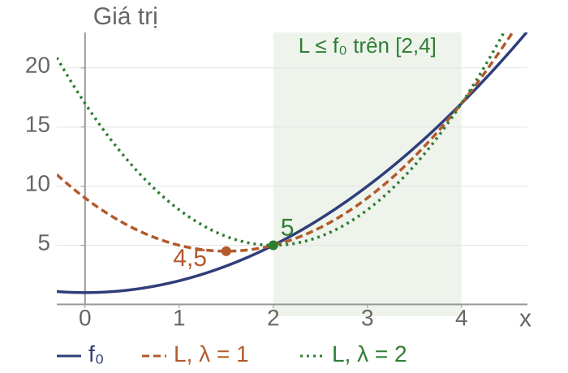
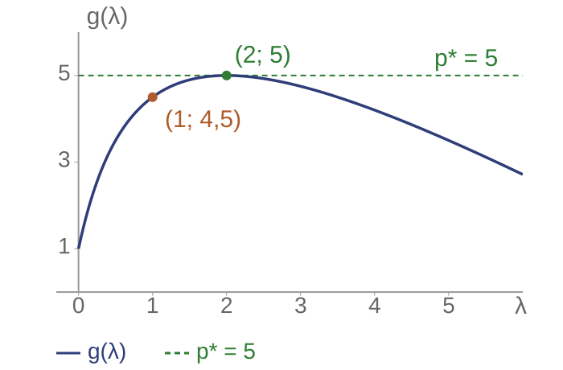
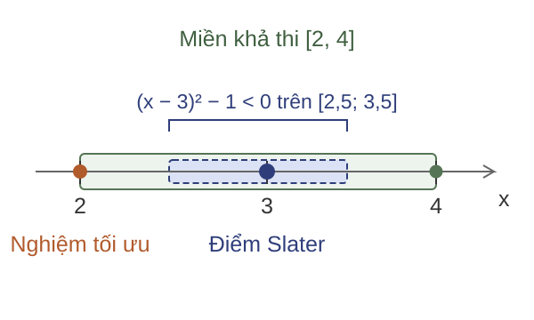

2. Hàm và bài toán đối ngẫu LagrangeNhu cầu: một cận dưới của giá trị tối ưu để chứng nhận một điểm khả thi là tối ưu.
Hàm Lagrange · hàm đối ngẫu · đối ngẫu yếu · bài toán đối ngẫu
Một phương án khả thi $\hat x$ chỉ cho cận trên $p^*\le f_0(\hat x)$. Cận dưới được dựng từ chính dữ liệu bài toán: hàm Lagrange $L$, hàm đối ngẫu $g$, định lý đối ngẫu yếu $g\le p^*$ và bài toán đối ngẫu chọn cận lớn nhất $d^*$. Kết quả của phần 2 là bất đẳng thức $d^*\le p^*$ cùng các ví dụ có $d^*=p^*$; câu hỏi còn lại cho phần 3 là khi nào đẳng thức này được bảo đảm.
Cận dưới cho giá trị tối ưu
Nhắc lại: $p^*=\inf_{x\in C}f_0(x)$ với $C$ là tập khả thi; điểm của $C$ đạt $p^*$ là nghiệm tối ưu.
Điểm khả thi $\hat x$ cho cận trên $p^*\le f_0(\hat x)$.
Nhu cầu: một cận dưới $\ell\le p^*$ tính từ chính các hàm của bài toán.
Nếu $\ell=f_0(\hat x)$ thì $\hat x$ là nghiệm tối ưu.
Bài toán cực tiểu có ràng buộc gồm một hàm mục tiêu $f_0$ và một số ràng buộc; tập khả thi $C$, giá trị tối ưu $p^*$ và nghiệm tối ưu đã có ở Bài 01 và Bài 02. Bài toán đặt ra hai nhiệm vụ khác nhau: tìm một điểm khả thi tốt, và chứng minh điểm đó tối ưu.
Một điểm khả thi $\hat x$ chỉ cho bất đẳng thức $p^*\le f_0(\hat x)$. Kết luận "$\hat x$ tối ưu" là một phát biểu về mọi điểm khả thi: $f_0(x)\ge f_0(\hat x)$ với mọi $x\in C$. Không thể kiểm tra từng điểm khi $C$ vô hạn. Cận dưới gói phát biểu ấy vào một số: $\ell$ là cận dưới (lower bound) nếu $f_0(x)\ge\ell$ với mọi $x\in C$, khi đó $\ell\le p^*$. Nếu $\ell=f_0(\hat x)$ thì $f_0(\hat x)=\ell\le p^*\le f_0(\hat x)$, nên $\hat x$ tối ưu (Mệnh đề 03.2).
Nếu $\ell<f_0(\hat x)$, hiệu $f_0(\hat x)-\ell$ chặn trên sai số tối ưu $f_0(\hat x)-p^*$; cận dưới $\ell=p^*$ gọi là cận khít (tight bound), cận $\ell<p^*$ gọi là cận lỏng (loose bound). Đối ngẫu Lagrange tạo cận dưới có hệ thống từ chính dữ liệu bài toán. Nguồn: Boyd và Vandenberghe (2004), chương 5, mục 5.1–5.2.
Bài toán một biến $\min x^2+1$ trên $[2,4]$ cho hàm mục tiêu, ràng buộc và nghiệm cụ thể để dựng cận dưới đầu tiên.
Ví dụ: bài toán một biến trên đoạn [2,4]
Tìm số thực $x$ để $x^2+1$ nhỏ nhất, với $2\le x\le4$.

Hàm mục tiêu $f_0(x)=x^2+1$.
Ràng buộc viết dưới dạng
$$f_1(x)=(x-2)(x-4)\le0.$$
Trên $[2,4]$, $f_0'(x)=2x>0$ nên $f_0$ tăng.
Nghiệm tối ưu $x^*=2$, giá trị tối ưu $p^*=5$.
Bài toán một biến trên đoạn $[2,4]$ là ví dụ xuyên suốt của bài; nó có đủ thành phần của bài toán tổng quát với kích thước nhỏ nhất: một biến, một ràng buộc. Bài toán yêu cầu chọn số thực $x$ trong đoạn từ 2 đến 4 để $x^2+1$ nhỏ nhất.
Hình vẽ parabol $f_0(x)=x^2+1$ trên trục $x$, với dải tô là miền khả thi $[2,4]$. Điểm $(0,1)$ là cực tiểu trên toàn trục số nhưng nằm ngoài miền khả thi. Trên $[2,4]$, $f_0'(x)=2x>0$ nên $f_0$ tăng, và cực tiểu đạt tại đầu trái: điểm $(2,5)$, tức $x^*=2$, $p^*=5$.
Hai bất đẳng thức $2\le x\le4$ được gộp thành một ràng buộc $f_1(x)=(x-2)(x-4)\le0$. Tích hai thừa số không dương khi và chỉ khi $x-2\ge0$ và $x-4\le0$, vì $x-2>x-4$ nên trường hợp $x-2\le0\le x-4$ không xảy ra. Hàm $f_1$ là parabol quay lên, âm trên khoảng mở $(2,4)$ và bằng 0 tại hai đầu. Mọi bất đẳng thức của bài được viết ở dạng $f_i(x)\le0$; viết thành hai ràng buộc $2-x\le0$, $x-4\le0$ cũng đúng nhưng sẽ cần hai nhân tử.
Ví dụ giải được bằng quan sát, nên dùng được để kiểm tra phương pháp tạo cận trước khi áp dụng cho bài toán chưa biết nghiệm. Nguồn: Boyd và Vandenberghe (2004), chương 5, mục 5.1–5.2.
Vì $f_1\le0$ trên miền khả thi, cộng $\lambda f_1$ với $\lambda\ge0$ vào $f_0$ cho một hàm không vượt $f_0$ trên $[2,4]$, và họ hàm này tạo ra cận dưới.
Họ hàm tạo cận dưới

Với $f_0=x^2+1$, $f_1=(x-2)(x-4)$, $\lambda\ge0$: đặt $L=f_0+\lambda f_1$.
Trên miền khả thi: $L\le f_0$.
Chọn $\lambda=1$:
$$L(x,1)=2(x-1{,}5)^2+4{,}5$$
$f_0(x)\ge4{,}5$ với mọi $x$ khả thi.
Cần một cận dưới cho $p^*=5$ mà không dùng nghiệm đã biết. Cách làm là thay $f_0$ bằng một hàm nhỏ hơn hoặc bằng $f_0$ trên miền khả thi nhưng dễ cực tiểu trên toàn trục số.
Với $\lambda\ge0$ và $x$ khả thi, $\lambda f_1(x)\le0$, nên $L(x,\lambda)=f_0(x)+\lambda f_1(x)\le f_0(x)$. Giá trị nhỏ nhất của $L$ trên toàn $\mathbb R$ không vượt $L(x,\lambda)$, do đó không vượt $f_0(x)$ với mọi $x$ khả thi, tức là không vượt $p^*$. Với $\lambda=1$: $L(x,1)=x^2+1+x^2-6x+8=2x^2-6x+9=2(x-1{,}5)^2+4{,}5$. Giá trị nhỏ nhất là 4,5, nên $f_0(x)\ge4{,}5$ trên miền khả thi.
Hình vẽ $f_0$ cùng hai đường $L$ ứng với $\lambda=1$ và $\lambda=2$. Trên $[2,4]$ cả hai đường nằm dưới $f_0$; ngoài đoạn này $f_1>0$ nên $L$ có thể vượt $f_0$. Đường $\lambda=1$ có đáy 4,5 tại $x=1{,}5$, ngoài miền khả thi; đường $\lambda=2$ có đáy 5. Điểm đáy không khả thi không làm cận sai, vì lập luận chỉ dùng giá trị nhỏ nhất của $L$, không dùng điểm đạt. Các giá trị $\lambda$ khác nhau cho cận khác nhau: 4,5 là cận lỏng, 5 là cận khít. Nguồn: Boyd và Vandenberghe (2004), chương 5, mục 5.1–5.2.
Phép cộng $\lambda f_1$ vào $f_0$, viết cho $m$ bất đẳng thức và bổ sung các đẳng thức affine, cho định nghĩa hàm Lagrange.
Hàm Lagrange
$x\in\mathbb R^n$, $f_i:\mathbb R^n\to\mathbb R$ ($i=0,\ldots,m$), $A\in\mathbb R^{p\times n}$.
Xét bài toán gốc $\min f_0(x)$ với $f_i(x)\le0$, $Ax=b$.
Định nghĩa. Hàm Lagrange là
$$L(x,\lambda,\nu)=f_0(x)+\sum_{i=1}^m\lambda_i f_i(x)+\nu^T(Ax-b)$$
$\lambda\in\mathbb R^m$, $\lambda\ge0$; $\nu\in\mathbb R^p$ tự do: các nhân tử Lagrange .
Nhắc lại: bài toán gốc là bài toán lồi khi $f_0,\ldots,f_m$ lồi; đẳng thức $Ax=b$ luôn affine.
Phép cộng ở ví dụ được tổng quát hóa cho bài toán gốc (primal problem) có biến $x\in\mathbb R^n$, hàm mục tiêu $f_0$, $m$ bất đẳng thức $f_i(x)\le0$ với $i=1,\ldots,m$, và $p$ đẳng thức affine $Ax=b$, trong đó $A\in\mathbb R^{p\times n}$, $b\in\mathbb R^p$. Mọi $f_i$ nhận giá trị hữu hạn trên toàn $\mathbb R^n$; riêng bài toán chọn gói ở phần 3 có miền $D=\{0,1\}^3$, và khi đó infimum trong $g$ lấy trên $D$.
Hàm Lagrange (Lagrangian) gán cho bất đẳng thức thứ $i$ một nhân tử Lagrange (Lagrange multiplier) $\lambda_i$ và cho đẳng thức thứ $j$ một nhân tử $\nu_j$. Vì $Ax-b\in\mathbb R^p$, ta có $\nu\in\mathbb R^p$ và $\nu^T(Ax-b)=\sum_{j=1}^p\nu_j(a_j^Tx-b_j)$, với $a_j^T$ là hàng thứ $j$ của $A$. Ví dụ ở trang trước là trường hợp $n=1$, $m=1$, không có đẳng thức: $L(x,\lambda)=x^2+1+\lambda(x-2)(x-4)$.
Dấu của nhân tử được chọn để $L$ không vượt $f_0$ trên miền khả thi. Tại điểm khả thi, $f_i(x)\le0$; với $\lambda_i\ge0$ thì $\lambda_if_i(x)\le0$, còn với $\lambda_i<0$ số hạng này không âm và tính chất tạo cận mất. Hạng $\nu^T(Ax-b)$ bằng 0 tại mọi điểm khả thi với $\nu$ bất kỳ, nên $\nu$ không cần ràng buộc dấu. Công thức của $L$ vẫn xác định với nhân tử thực bất kỳ; điều kiện $\lambda\ge0$ là điều kiện để $L$ tạo cận dưới. Nguồn: Boyd và Vandenberghe (2004), chương 5, mục 5.1–5.2.
Lấy infimum của $L$ theo $x$ khi giữ cố định $(\lambda,\nu)$ cho hàm đối ngẫu, đại lượng tổng quát của số 4,5 trong ví dụ.
Hàm đối ngẫu
Định nghĩa. Hàm đối ngẫu là cận dưới lớn nhất của $L$ theo $x$, với nhân tử cố định:
$$g(\lambda,\nu)=\inf_{x\in\mathbb R^n}L(x,\lambda,\nu)$$
$\inf$: cận dưới lớn nhất; có thể không đạt. Không áp lại các ràng buộc của bài toán gốc. $g$ có thể bằng $-\infty$.
Ví dụ đã lấy giá trị nhỏ nhất của $L(x,1)$ theo $x$. Hàm đối ngẫu (dual function) lặp lại phép tính đó cho mọi bộ nhân tử: $g:\mathbb R^m\times\mathbb R^p\to\mathbb R\cup\{-\infty\}$. Với mỗi $(\lambda,\nu)$ cố định, $g(\lambda,\nu)$ là kết quả của một bài toán con không ràng buộc theo $x\in\mathbb R^n$.
Thứ nhất, infimum (cận dưới lớn nhất của một tập giá trị) được dùng thay cho giá trị nhỏ nhất vì giá trị nhỏ nhất có thể không đạt: infimum của $e^x$ trên $\mathbb R$ bằng 0 nhưng không có $x$ nào cho $e^x=0$. Khi có điểm đạt, hai khái niệm trùng nhau. Thứ hai, $x$ chạy trên toàn $\mathbb R^n$ chứ không trên miền khả thi: ràng buộc đã được đưa vào $L$ qua các hạng $\lambda_if_i$ và $\nu^T(Ax-b)$. Áp lại ràng buộc sẽ đưa bài toán con về độ khó của bài toán gốc. Lấy infimum trên tập lớn hơn chỉ làm kết quả nhỏ hơn hoặc bằng, nên tính chất cận dưới vẫn giữ. Trong ví dụ, infimum lấy trên $\mathbb R$, không trên $[2,4]$.
Thứ ba, $g(\lambda,\nu)=-\infty$ khi $L$ không bị chặn dưới theo $x$; chẳng hạn infimum của $x$ trên $\mathbb R$ là $-\infty$. Một cận bằng $-\infty$ đúng nhưng không mang thông tin. Nguồn: Boyd và Vandenberghe (2004), chương 5, mục 5.1–5.2.
Trước khi tính $g$ cho ví dụ, cấu trúc chung của $g$ được xác định: $g$ là hàm lõm theo nhân tử, bất kể bài toán gốc có lồi hay không.
Tính lõm của hàm đối ngẫu
Mệnh đề. $g$ lõm theo nhân tử, kể cả khi bài toán gốc không lồi:
$$g(\vartheta\theta_a+(1-\vartheta)\theta_b)\ge\vartheta g(\theta_a)+(1-\vartheta)g(\theta_b),$$
với $\theta=(\lambda,\nu)$, $0\le\vartheta\le1$ và $g(\theta_a),g(\theta_b)$ hữu hạn.
Ý nghĩa: cực đại $g$, tức cực tiểu hàm lồi $-g$, trên tập lồi $\lambda\ge0$ là bài toán tối ưu lồi.
Chứng minh. $g$ là infimum theo $x$ của họ hàm $L(x,\cdot)$, mỗi hàm affine (hằng số cộng hàm tuyến tính) theo $\theta$.
Mệnh đề cho hình dạng của $g$ theo nhân tử: $g$ luôn lõm (concave), tức $-g$ lồi. Hệ quả: bài toán cực đại $g$ trên tập lồi $\lambda\ge0$, về sau gọi là bài toán đối ngẫu, là một bài toán tối ưu lồi, kể cả khi bài toán gốc không lồi. Tính lõm là bất đẳng thức trong phát biểu, ngược chiều với tính lồi. Lõm không có nghĩa là dễ tính: $g$ vẫn được định nghĩa qua một infimum.
Ý chứng minh: với $x$ cố định, $L(x,\cdot)$ là một hàm affine của nhân tử và luôn không nhỏ hơn $g$; tổ hợp lồi của hai bất đẳng thức rồi lấy infimum theo $x$ cho bất đẳng thức của $g$. Nguồn: Boyd và Vandenberghe (2004), mục 5.1.2, trang 216.
Chứng minh tính lõm chỉ dùng tính affine của $L$ theo nhân tử và định nghĩa infimum.
Chứng minh: tính lõm của hàm đối ngẫu
Đặt $\theta_\vartheta=\vartheta\theta_a+(1-\vartheta)\theta_b$, với $g(\theta_a),g(\theta_b)$ hữu hạn, $0\le\vartheta\le1$.
Bước 1. Với mỗi $x$ cố định, $L$ affine theo $\theta$, nên
$$\begin{aligned}L(x,\theta_\vartheta)&=\vartheta L(x,\theta_a)+(1-\vartheta)L(x,\theta_b)\\&\ge\vartheta g(\theta_a)+(1-\vartheta)g(\theta_b).\end{aligned}$$
Bước 2. Lấy $\inf_x$; vế phải không phụ thuộc $x$:
$$g(\theta_\vartheta)\ge\vartheta g(\theta_a)+(1-\vartheta)g(\theta_b).$$
Cần chứng minh bất đẳng thức của mệnh đề, với $\theta=(\lambda,\nu)\in\mathbb R^m\times\mathbb R^p$. Khi $x$ cố định, các số $f_0(x)$, $f_i(x)$ và vector $Ax-b$ là hằng số, nên $L(x,\theta)=f_0(x)+\sum_i\lambda_if_i(x)+\nu^T(Ax-b)$ là một hằng số cộng một hàm tuyến tính của $\theta$, tức là affine theo $\theta$. Điều này cho đẳng thức ở bước 1. Theo định nghĩa infimum, $L(x,\theta_a)\ge g(\theta_a)$ và $L(x,\theta_b)\ge g(\theta_b)$; nhân với các trọng số không âm $\vartheta$, $1-\vartheta$ rồi cộng được bất đẳng thức của bước 1. Vế phải không phụ thuộc $x$ và là cận dưới của $L(x,\theta_\vartheta)$ với mọi $x$, nên không vượt infimum $g(\theta_\vartheta)$.
Chọn $\theta_a,\theta_b$ có $g$ hữu hạn để tránh phép tính không xác định với vô cùng; $g$ có thể bằng $-\infty$ ngoài miền hữu hiệu (effective domain), tức tập các nhân tử có $g>-\infty$. Với $\vartheta=0$ hoặc $\vartheta=1$, kết luận là đẳng thức. Chứng minh chỉ dùng tính affine theo nhân tử; tính lồi của bài toán gốc và của $L$ theo $x$ không tham gia. Lỗi thường gặp là tách infimum của một tổng thành tổng các infimum. Nguồn: Boyd và Vandenberghe (2004), mục 5.1.2, trang 216.
Với ví dụ một biến, $g(\lambda)$ được tính tường minh bằng cách thay $f_0$, $f_1$ vào $L$, gom hệ số theo $x$ rồi hoàn thành bình phương.
Ví dụ: bài toán một biến, lập hàm Lagrange
Xét $\min_{x\in\mathbb R}(x^2+1)$ với $(x-2)(x-4)\le0$.
Với $\lambda\ge0$, thay $f_0$ và $f_1$ vào $L=f_0+\lambda f_1$:
$$\begin{aligned}L(x,\lambda)&=x^2+1+\lambda(x-2)(x-4)\\&=x^2+1+\lambda(x^2-6x+8)\\&=(1+\lambda)x^2-6\lambda x+1+8\lambda.\end{aligned}$$
Giữ $\lambda$ cố định, tìm giá trị nhỏ nhất của $L$ theo $x\in\mathbb R$ để tính $g(\lambda)$.
Định nghĩa $g$ được áp dụng vào ví dụ. Bài toán được nhắc lại trên mặt trang để phép thay có thể đối chiếu: $f_0(x)=x^2+1$, $f_1(x)=(x-2)(x-4)$, một nhân tử $\lambda\ge0$; không có đẳng thức nên không có $\nu$.
Phép tính gồm ba bước: thay hai hàm vào $L=f_0+\lambda f_1$; khai triển $(x-2)(x-4)=x^2-6x+8$; nhân từng hạng với $\lambda$ rồi gom theo lũy thừa của $x$: hệ số bậc hai $1+\lambda$, hệ số bậc nhất $-6\lambda$, hằng số $1+8\lambda$. Hai phép thử kiểm tra kết quả: $\lambda=0$ cho lại $f_0(x)=x^2+1$; $\lambda=1$ cho $2x^2-6x+9$, đúng biểu thức của $L(x,1)$ đã gặp.
Trong bài toán con tính $g(\lambda)$, $\lambda$ là tham số cố định và $x$ chạy trên toàn trục số. Hệ số bậc hai $1+\lambda$ dương với mọi $\lambda\ge0$, nên $L(\cdot,\lambda)$ là parabol quay lên, bị chặn dưới và có điểm cực tiểu duy nhất. Vì vậy $g(\lambda)$ hữu hạn trên toàn miền $\lambda\ge0$, khác với trường hợp $g=-\infty$ nêu ở định nghĩa. Nguồn: Boyd và Vandenberghe (2004), chương 5, mục 5.1–5.2.
Dạng $(1+\lambda)x^2-6\lambda x+1+8\lambda$ với hệ số bậc hai dương là đầu vào cho phép hoàn thành bình phương, phép tính cho công thức của $g(\lambda)$.
Ví dụ: bài toán một biến, tính hàm đối ngẫu
Xét $\min_{x\in\mathbb R}(x^2+1)$ với $(x-2)(x-4)\le0$; $\lambda\ge0$.
Hoàn thành bình phương bằng cách thêm rồi bớt cùng một hạng:
$$\begin{aligned}L(x,\lambda)&=(1+\lambda)\left[x^2-\frac{6\lambda}{1+\lambda}x+\left(\frac{3\lambda}{1+\lambda}\right)^2-\left(\frac{3\lambda}{1+\lambda}\right)^2\right]+1+8\lambda\\&=(1+\lambda)\left(x-\frac{3\lambda}{1+\lambda}\right)^2+1+8\lambda-\frac{9\lambda^2}{1+\lambda}.\end{aligned}$$
Vì $1+\lambda>0$, cực tiểu tại $x(\lambda)=\frac{3\lambda}{1+\lambda}$.
$$g(\lambda)=1+8\lambda-\frac{9\lambda^2}{1+\lambda}=10-\lambda-\frac9{1+\lambda}$$
Bài toán con là cực tiểu $L(x,\lambda)=(1+\lambda)x^2-6\lambda x+1+8\lambda$ theo $x\in\mathbb R$ với $\lambda\ge0$ cố định. Hoàn thành bình phương cho cả điểm cực tiểu lẫn giá trị cực tiểu mà không cần đạo hàm.
Đặt $1+\lambda$ ra ngoài hai hạng chứa $x$, trong ngoặc còn $x^2-\frac{6\lambda}{1+\lambda}x$. Nửa hệ số của $x$ là $-\frac{3\lambda}{1+\lambda}$; thêm rồi bớt bình phương của nó giữ nguyên giá trị biểu thức. Ba hạng đầu trong ngoặc tạo thành $\left(x-\frac{3\lambda}{1+\lambda}\right)^2$. Hạng bị bớt, nhân với $1+\lambda$, bằng $\frac{9\lambda^2}{1+\lambda}$. Vì $1+\lambda>0$, hạng bình phương không âm và bằng 0 đúng tại $x(\lambda)=\frac{3\lambda}{1+\lambda}$, nên giá trị nhỏ nhất là phần hằng số còn lại.
Rút gọn dùng phép chia $9\lambda^2=(1+\lambda)(9\lambda-9)+9$, tức $\frac{9\lambda^2}{1+\lambda}=9\lambda-9+\frac9{1+\lambda}$. Thay vào được $g(\lambda)=10-\lambda-\frac9{1+\lambda}$. Kiểm tra: $g(0)=1$ là cực tiểu của $f_0$ trên $\mathbb R$; $g(1)=4{,}5$ và $x(1)=1{,}5$ khớp với phép tính trước; $g(2)=5$ và $x(2)=2$. Điểm cực tiểu $x(\lambda)$ thuộc $[2,4]$ khi và chỉ khi $3\lambda\ge2(1+\lambda)$, tức $\lambda\ge2$; với $\lambda<2$ nó nằm ngoài miền khả thi. Nguồn: Boyd và Vandenberghe (2004), chương 5, mục 5.1–5.2.
Mỗi giá trị $g(\lambda)$ vừa tính là một cận dưới của $p^*$; định lý đối ngẫu yếu chứng minh điều này cho bài toán gốc tổng quát.
Đối ngẫu yếu
Định lý. Với $x$ khả thi và $\lambda\ge0$:
$$g(\lambda,\nu)\ \le\ L(x,\lambda,\nu)\ \le\ f_0(x)$$
Bất đẳng thức đầu: định nghĩa $\inf$. Bất đẳng thức sau: $\lambda_i f_i(x)\le0$, $Ax-b=0$. Suy ra $g(\lambda,\nu)\le p^*$. Không cần tính lồi.
Ví dụ cho $g(1)=4{,}5\le5$ và $g(2)=5\le5$. Định lý đối ngẫu yếu (weak duality) khẳng định quan hệ này cho bài toán gốc tổng quát, với mọi $x$ khả thi, mọi $\lambda\ge0$ và mọi $\nu\in\mathbb R^p$.
Bất đẳng thức thứ nhất, $g(\lambda,\nu)\le L(x,\lambda,\nu)$, chỉ dùng định nghĩa: $g$ là infimum của $L$ trên toàn $\mathbb R^n$, nên không vượt giá trị của $L$ tại bất kỳ điểm nào, khả thi hay không. Bất đẳng thức thứ hai, $L(x,\lambda,\nu)\le f_0(x)$, cần $x$ khả thi: $f_i(x)\le0$ và $\lambda_i\ge0$ cho $\lambda_if_i(x)\le0$, còn $Ax-b=0$ làm hạng chứa $\nu$ bằng 0. Ghép hai bước được $g(\lambda,\nu)\le f_0(x)$ cho mọi $x$ khả thi. Vế trái không phụ thuộc $x$, nên lấy infimum vế phải trên miền khả thi cho $g(\lambda,\nu)\le p^*$.
Lập luận chỉ dùng định nghĩa infimum và dấu, không dùng tính lồi, nên định lý đúng cả với bài toán phi lồi. Lỗi thường gặp là áp $L\le f_0$ ngoài miền khả thi, nơi $f_i>0$ có thể làm bất đẳng thức sai. Nếu miền khả thi rỗng thì $p^*=+\infty$ và kết luận hiển nhiên. Hệ quả dùng nhiều nhất: với $x$ khả thi, $f_0(x)-g(\lambda,\nu)\ge f_0(x)-p^*\ge0$. Nguồn: Boyd và Vandenberghe (2004), chương 5, mục 5.1–5.2.
Mọi $g(\lambda,\nu)$ với $\lambda\ge0$ đều là cận dưới của $p^*$, nên cận tốt nhất là supremum của $g$; bài toán tìm supremum này là bài toán đối ngẫu.
Bài toán đối ngẫu
Định nghĩa. Bài toán đối ngẫu chọn cận dưới lớn nhất:
$$d^*=\sup_{\lambda\ge0,\;\nu}g(\lambda,\nu).$$
Bộ $(\lambda^*,\nu^*)$ với $\lambda^*\ge0$, $g(\lambda^*,\nu^*)=d^*$ là nghiệm đối ngẫu .
Theo đối ngẫu yếu, $d^*\le p^*$.
Lưu ý: $\sup$ (cận trên nhỏ nhất) có thể không đạt.
Họ cận $g(\lambda,\nu)$ chứa cả cận lỏng (4,5) và cận khít (5). Bài toán đối ngẫu (dual problem) chọn cận lớn nhất: cực đại $g$ theo $\lambda\ge0$ và $\nu$ tự do. Giá trị tối ưu đối ngẫu $d^*$ là supremum này; đối ngẫu yếu đúng cho từng bộ nhân tử nên $d^*\le p^*$ (Hệ quả 03.10). Một nghiệm đối ngẫu (dual optimal) là một bộ nhân tử đạt $d^*$.
Theo mệnh đề về tính lõm, bài toán đối ngẫu là cực đại một hàm lõm trên tập lồi $\lambda\ge0$, tức một bài toán tối ưu lồi. Mỗi giá trị của $g$ vẫn là một bài toán cực tiểu theo $x$ và có thể không có công thức tường minh. Supremum có thể không đạt: bài toán $\min x_1+x_2$ với $x_1^2+x_2^2\le0$ ở phần 3 có $d^*=0$ mà không nhân tử hữu hạn nào đạt.
Với quy hoạch tuyến tính $\min c^Tx$, $\beta_i-a_i^Tx\le0$, hàm đối ngẫu bằng $\beta^T\lambda$ khi $\sum_i\lambda_ia_i=c$ và bằng $-\infty$ trong trường hợp khác, nên bài toán đối ngẫu cũng là một quy hoạch tuyến tính, và mỗi nhân tử khả thi đối ngẫu là một bộ hệ số chứng nhận của Bài 02 (Mệnh đề 03.11). Nguồn: Boyd và Vandenberghe (2004), chương 5, mục 5.1–5.2.
Với bài toán một biến, $g(\lambda)=10-\lambda-\frac9{1+\lambda}$ có một biến nhân tử, nên bài toán đối ngẫu giải được bằng đạo hàm.
Ví dụ: bài toán một biến, giải bài toán đối ngẫu

Cực đại $g$ trên $\lambda\ge0$: $g'(\lambda)=-1+\frac9{(1+\lambda)^2}$.
$g'>0$ khi $\lambda<2$, $g'<0$ khi $\lambda>2$: $\lambda^*=2$, $d^*=5$.
Điểm khả thi $x=2$: $f_0(2)=5=g(2)$.
Diễn giải: cặp $(2,2)$ chứng nhận cả hai phía, $p^*=d^*=5$.
Định nghĩa bài toán đối ngẫu được áp dụng cho bài toán một biến, với $g$ đã tính ở hai trang ví dụ trước. Hình vẽ $g(\lambda)$ với $\lambda$ từ 0 đến 5, cùng đường ngang $p^*=5$. Đường cong đi lên từ $g(0)=1$, qua $(1;\,4{,}5)$, chạm đường $p^*$ tại $(2;\,5)$ rồi đi xuống, và không vượt đường $p^*$ ở đâu, đúng với đối ngẫu yếu.
Đạo hàm $g'(\lambda)=-1+\frac9{(1+\lambda)^2}$ dương khi $(1+\lambda)^2<9$, tức $0\le\lambda<2$, và âm khi $\lambda>2$; vậy $g$ tăng trên $[0,2]$, giảm trên $[2,\infty)$, và $\lambda^*=2$, $d^*=5$. Kiểm tra: $g(3)=10-3-2{,}25=4{,}75<5$. Điểm $x=2$ khả thi với $f_0(2)=5=g(2)$; chuỗi $g(2)\le d^*\le p^*\le f_0(2)$ có hai đầu bằng nhau, nên $x^*=2$ là nghiệm gốc, $\lambda^*=2$ là nghiệm đối ngẫu và $p^*=d^*=5$ (Hệ quả 03.10(c)). Nguồn: Boyd và Vandenberghe (2004), chương 5, mục 5.2.
Nguyên tắc chọn cận lớn nhất giữ nguyên khi có nhiều ràng buộc: mỗi ràng buộc nhận một nhân tử, và $g$ trở thành hàm của vector nhân tử.
Ví dụ: bài toán hai biến, tính hàm đối ngẫu
Xét $\min_{x\in\mathbb R^2}\frac12(x_1^2+x_2^2)$ với $x_1\ge1$, $x_2\ge2$.
Viết $f_1=1-x_1\le0$, $f_2=2-x_2\le0$; dùng $\lambda_1,\lambda_2\ge0$.
$$L=\frac12(x_1^2+x_2^2)+\lambda_1(1-x_1)+\lambda_2(2-x_2).$$
Giữ $\lambda$ cố định: $\partial L/\partial x_i=x_i-\lambda_i=0$, nên $x_i=\lambda_i$.
$$g(\lambda_1,\lambda_2)=\lambda_1+2\lambda_2-\frac12(\lambda_1^2+\lambda_2^2).$$
Bài toán hai biến kiểm tra rằng cách lập $L$ và tính $g$ không đổi khi có nhiều biến và nhiều nhân tử. Bài toán tìm điểm có nửa bình phương chuẩn nhỏ nhất trong miền $x_1\ge1$, $x_2\ge2$; ở đây $n=2$, $m=2$, không có đẳng thức.
Mỗi bất đẳng thức được viết về dạng $f_i(x)\le0$ trước khi lập $L$: $f_1=1-x_1$, $f_2=2-x_2$. Mỗi ràng buộc có nhân tử riêng, $\lambda=(\lambda_1,\lambda_2)\in\mathbb R^2$, $\lambda\ge0$. Hàm Lagrange tách được theo từng biến: $L=\left[\frac12x_1^2-\lambda_1x_1\right]+\left[\frac12x_2^2-\lambda_2x_2\right]+\lambda_1+2\lambda_2$. Mỗi ngoặc là tam thức bậc hai có hệ số $\frac12>0$, nên đạt cực tiểu tại nơi đạo hàm bằng 0: $x_i=\lambda_i$. Giá trị mỗi ngoặc tại đó là $\frac12\lambda_i^2-\lambda_i^2=-\frac12\lambda_i^2$. Cộng hằng số $\lambda_1+2\lambda_2$ được công thức của $g$ trong hộp.
Điểm cực tiểu $(\lambda_1,\lambda_2)$ của $L$ chỉ khả thi khi $\lambda_1\ge1$ và $\lambda_2\ge2$; với nhân tử khác, nó nằm ngoài miền nhưng $g$ vẫn là cận dưới hợp lệ. Hàm $g$ hữu hạn với mọi $\lambda$ và là đa thức bậc hai có phần bậc hai $-\frac12(\lambda_1^2+\lambda_2^2)$, nên lõm, đúng như mệnh đề tổng quát. Nguồn: ghi chú bài giảng, Ví dụ 03.6; Boyd và Vandenberghe (2004), chương 5, mục 5.1–5.2.
Hàm $g(\lambda_1,\lambda_2)$ là mục tiêu của bài toán đối ngẫu trên $\lambda_1,\lambda_2\ge0$, giải được bằng hoàn thành bình phương theo từng nhân tử.
Ví dụ: bài toán hai biến, giải bài toán đối ngẫu
Xét $\min\frac12(x_1^2+x_2^2)$ với $x_1\ge1$, $x_2\ge2$. Cực đại $g$ trên $\lambda_1,\lambda_2\ge0$.
Hoàn thành bình phương theo từng nhân tử:
$$g=\frac52-\frac12\left[(\lambda_1-1)^2+(\lambda_2-2)^2\right]\le\frac52.$$
Dấu bằng tại $\lambda^*=(1,2)\ge0$, nên $d^*=\frac52$.
Điểm $x=(1,2)$ khả thi và $f_0(x)=\frac12(1+4)=\frac52$.
Kết luận: $x^*=(1,2)$, $p^*=d^*=\frac52$.
Bài toán đối ngẫu của bài toán hai biến là cực đại $g(\lambda_1,\lambda_2)=\lambda_1+2\lambda_2-\frac12(\lambda_1^2+\lambda_2^2)$ trên $\lambda_1,\lambda_2\ge0$.
Hoàn thành bình phương riêng cho từng nhân tử: $\lambda_1-\frac12\lambda_1^2=\frac12-\frac12(\lambda_1-1)^2$ và $2\lambda_2-\frac12\lambda_2^2=2-\frac12(\lambda_2-2)^2$. Tổng hai hằng số là $\frac52$. Hai bình phương không âm nên $g\le\frac52$ với mọi $\lambda$; dấu bằng tại $\lambda^*=(1,2)$, điểm thỏa $\lambda\ge0$. Vậy $d^*=\frac52$ và bài toán đối ngẫu đạt nghiệm.
Phía bài toán gốc: với $\lambda^*=(1,2)$, điểm cực tiểu của $L$ là $x=(\lambda_1,\lambda_2)=(1,2)$. Điểm này khả thi vì $1\ge1$, $2\ge2$, và $f_0(1,2)=\frac52$. Đối ngẫu yếu cho $\frac52=g(\lambda^*)\le p^*\le f_0(1,2)=\frac52$, nên $p^*=\frac52$ và $x^*=(1,2)$. Có thể đọc chứng nhận trực tiếp: $L(x,(1,2))=\frac12[(x_1-1)^2+(x_2-2)^2]+\frac52\ge\frac52$ với mọi $x$, và $L\le f_0$ trên miền khả thi. Kết luận chỉ dùng đối ngẫu yếu, chưa cần Slater. Cả hai ràng buộc thỏa với dấu bằng tại nghiệm, và cả hai nhân tử dương. Nguồn: ghi chú bài giảng, Ví dụ 03.6.
Chuỗi $g(\lambda^*)\le p^*\le f_0(x)$ với một nhân tử và một điểm khả thi cho cùng giá trị là chứng nhận mà bài tập về mục tiêu tuyến tính trên hình tròn yêu cầu tự dựng, lần này với $g=-\infty$ trên một phần trục nhân tử.
Bài tập: đối ngẫu của hàm tuyến tính trên hình tròn
Câu hỏi: Xét $\min_{x\in\mathbb R^2}x_1+x_2$ với $f_1(x)=x_1^2+x_2^2-2\le0$.
Lập $L$ và tính $g(\lambda)$ khi $\lambda>0$, $\lambda=0$, $\lambda<0$. Giải bài toán đối ngẫu. Tìm một điểm khả thi đạt cận và kết luận về $x^*$, $p^*$.
Bài tập kiểm tra quy trình tạo cận trên một bài toán có $g=-\infty$ ở một phần trục nhân tử: lập $L$, tính $g$ theo dấu của nhân tử, chọn cận lớn nhất, rồi tìm điểm khả thi đạt cận.
Gợi ý: với $\lambda>0$, $L$ tách thành tổng hai hàm một biến dạng $x_i+\lambda x_i^2$, mỗi hàm có cực tiểu tại $x_i=-\frac1{2\lambda}$. Với $\lambda=0$, $L=x_1+x_2$ affine; với $\lambda<0$, hệ số bậc hai âm. Câu 3 dùng chuỗi đối ngẫu yếu $g(\lambda^*)\le p^*\le f_0(x)$. Nguồn: ghi chú bài giảng, Bài tập 03.2 (bài toán của Bài tập 02.6).
Bài tập: đối ngẫu của hàm tuyến tính trên hình tròn
Câu hỏi: Giải bài toán đối ngẫu của $\min x_1+x_2$ với $x_1^2+x_2^2\le2$ và chứng nhận nghiệm.
Lời giải:
$L=x_1+x_2+\lambda(x_1^2+x_2^2-2)$; với $\lambda>0$: $x_i=-\frac1{2\lambda}$, $g(\lambda)=-\frac1{2\lambda}-2\lambda$. Với $\lambda\le0$, $L$ không bị chặn dưới: $g(\lambda)=-\infty$. $g'(\lambda)=\frac1{2\lambda^2}-2=0$ cho $\lambda^*=\frac12$, $d^*=g(\frac12)=-2$. $x=(-1,-1)$ khả thi, $f_0=-2=g(\frac12)$: $x^*=(-1,-1)$, $p^*=d^*=-2$.
(1) $L=x_1+x_2+\lambda(x_1^2+x_2^2-2)$. Với $\lambda>0$, mỗi số hạng $x_i+\lambda x_i^2=\lambda\left(x_i+\frac1{2\lambda}\right)^2-\frac1{4\lambda}$ có cận dưới đúng $-\frac1{4\lambda}$; cộng hai số hạng và hằng số $-2\lambda$ được $g(\lambda)=-\frac1{2\lambda}-2\lambda$. Với $\lambda=0$, $L=x_1+x_2$ không bị chặn dưới; với $\lambda<0$, $L\to-\infty$ khi $x_1\to\infty$. Vậy $g$ hữu hạn đúng trên $(0,\infty)$, tập gọi là miền hữu hiệu của $g$.
(2) $g'(\lambda)=\frac1{2\lambda^2}-2$ bằng 0 khi $\lambda^2=\frac14$, tức $\lambda^*=\frac12$ trên $(0,\infty)$; $g'>0$ trước và $g'<0$ sau, nên $d^*=g(\frac12)=-1-1=-2$. (3) Điểm cực tiểu của $L(\cdot,\frac12)$ là $x=(-1,-1)$, có $f_1=1+1-2=0$, khả thi, và $f_0=-2=g(\frac12)$. Đối ngẫu yếu cho $-2=g(\frac12)\le p^*\le f_0(-1,-1)=-2$, nên $x^*=(-1,-1)$ và $p^*=d^*=-2$. Kết quả khớp nghiệm của Bài tập 02.6, tìm bằng điều kiện bậc nhất. Nguồn: ghi chú bài giảng, Bài tập 03.2.
Bài toán một biến, bài toán hai biến và bài tập này đều có $d^*=p^*$; đối ngẫu yếu chỉ bảo đảm $d^*\le p^*$, và điều kiện bảo đảm đẳng thức là nội dung của phần 3.
3. Đối ngẫu mạnh và điều kiện SlaterNhu cầu: một điều kiện kiểm tra được trên dữ liệu bài toán bảo đảm $d^*=p^*$.
Khoảng đối ngẫu · đối ngẫu mạnh · điểm Slater · định lý Slater
Đối ngẫu yếu $d^*\le p^*$ đúng với mọi bài toán, và trong cả ba ví dụ của phần 2, cận tốt nhất bằng đúng $p^*$. Phần 3 định nghĩa khoảng đối ngẫu và đối ngẫu mạnh, dùng bài toán chọn gói để chỉ ra một khoảng dương, rồi phát biểu và chứng minh định lý Slater cho bài toán lồi; bài toán $\min x_1+x_2$ với $x_1^2+x_2^2\le0$ chỉ ra giới hạn của định lý. Kết quả của phần 3 là một giả thiết kiểm tra được và các kết luận nó bảo đảm; các kết quả này được đọc lại trên hình ở phần 4.
Khoảng đối ngẫu và đối ngẫu mạnh
Nhu cầu: điều kiện trên dữ liệu bảo đảm cận tốt nhất $d^*$ bằng $p^*$.
Định nghĩa. Với $\hat x$ khả thi và $(\lambda,\nu)$ khả thi đối ngẫu:
Khoảng đối ngẫu của cặp : $f_0(\hat x)-g(\lambda,\nu)$.Khoảng đối ngẫu tối ưu : $p^*-d^*$, khi $p^*$, $d^*$ hữu hạn.Đối ngẫu mạnh : $d^*=p^*$.Theo đối ngẫu yếu, $f_0(\hat x)-g(\lambda,\nu)\ge p^*-d^*\ge0$.
Khoảng đối ngẫu của cặp (duality gap) phụ thuộc vào phương án và nhân tử đang có; nó là khoảng chứng nhận của cận $\ell=g(\lambda,\nu)$ và chặn trên sai số tối ưu (suboptimality) $f_0(\hat x)-p^*$. Khoảng đối ngẫu tối ưu (optimal duality gap) $p^*-d^*$ chỉ phụ thuộc bài toán. Đối ngẫu mạnh (strong duality) nghĩa là cận tốt nhất lấy từ hàm đối ngẫu là cận khít. Bất đẳng thức trong hộp là Hệ quả 03.10(b).
Ở bài toán một biến, cặp $(\hat x,\lambda)=(2,1)$ có khoảng $5-4{,}5=0{,}5$, còn $p^*-d^*=0$ vì $g(2)=5=p^*$. Quan hệ giữa hai đại lượng là phân tích thành ba số hạng không âm: $$f_0(\hat x)-g(\lambda,\nu)=\bigl(f_0(\hat x)-p^*\bigr)+\bigl(p^*-d^*\bigr)+\bigl(d^*-g(\lambda,\nu)\bigr).$$ Số hạng đầu đo chất lượng phương án, số hạng cuối đo chất lượng nhân tử; ở cặp $(2,1)$, toàn bộ 0,5 nằm ở số hạng cuối. Vì vậy khoảng dương của một cặp không chứng minh khoảng tối ưu dương. Đối ngẫu mạnh là đẳng thức giữa hai giá trị tối ưu; nó không kéo theo bài toán gốc hay bài toán đối ngẫu đạt nghiệm. Nguồn: Boyd và Vandenberghe (2004), chương 5, mục 5.2.3.
Bài toán chọn gói của Bài 02 cho một khoảng đối ngẫu tối ưu dương, nên đẳng thức $d^*=p^*$ cần một giả thiết.
Ví dụ: khoảng đối ngẫu dương
Nhắc lại: bài toán chọn gói $\min2(x_1+x_2+x_3)$ trên $D=\{0,1\}^3$ với $1-x_i-x_j\le0$, $i<j$, có $p^*=4$.
Lưu ý: $g$ lấy infimum của $L$ trên $D$ thay cho $\mathbb R^n$; đối ngẫu yếu giữ nguyên.
$$g(\lambda)=\lambda_1+\lambda_2+\lambda_3+\textstyle\sum_{j=1}^3\min(0,\sigma_j),$$
với $\sigma_j$ là hệ số của $x_j$ trong $L$, như $\sigma_1=2-\lambda_1-\lambda_2$.
$\min(0,\sigma)\le\sigma/2$ cho $g\le3$; dấu bằng tại $\lambda=(1,1,1)$.
Diễn giải: $d^*=3<4=p^*$; miền $D$ rời rạc, không lồi.
Bài toán chọn gói của Bài 02 (Ví dụ 02.27) có ba ràng buộc phủ: ngày khô $1-x_1-x_3\le0$, đêm khô $1-x_1-x_2\le0$, trời mưa $1-x_2-x_3\le0$; điều kiện nhị phân nằm trong miền $D=\{0,1\}^3$ và không nhận nhân tử. Liệt kê tám phương án cho $p^*=4$.
Gom theo từng biến: $L=\lambda_1+\lambda_2+\lambda_3+\sigma_1x_1+\sigma_2x_2+\sigma_3x_3$ với $\sigma_1=2-\lambda_1-\lambda_2$, $\sigma_2=2-\lambda_2-\lambda_3$, $\sigma_3=2-\lambda_1-\lambda_3$. $L$ tách theo từng biến và $\min_{x_j\in\{0,1\}}\sigma_jx_j=\min(0,\sigma_j)$, nên được công thức trên mặt trang. Với mọi số thực $\sigma$, $\min(0,\sigma)\le\sigma/2$; vì mỗi $\lambda_i$ xuất hiện trong đúng hai hệ số, $\sigma_1+\sigma_2+\sigma_3=6-2(\lambda_1+\lambda_2+\lambda_3)$, nên $g(\lambda)\le\lambda_1+\lambda_2+\lambda_3+3-(\lambda_1+\lambda_2+\lambda_3)=3$. Tại $\lambda=(1,1,1)$, mọi $\sigma_j=0$ và $L(x,\lambda)=3$ với mọi $x\in D$, nên $d^*=3$.
Mọi nhân tử chỉ chứng nhận được rằng chi phí ít nhất là 3, trong khi không phương án khả thi nào có chi phí 3. Con số 3 trùng giá trị của nới lỏng tuyến tính ở Ví dụ 02.28. Bài toán lồi vẫn có thể có khoảng dương: $\min e^{-x}$ với $x^2/y\le0$ trên nửa mặt phẳng mở $y>0$ có $d^*=0<1=p^*$ và không có điểm Slater trong miền (Ví dụ 03.8). Với miền $D$, chứng minh đối ngẫu yếu chỉ dùng $x\in D$, nên định lý giữ nguyên. Trong học máy, chọn dữ liệu để gán nhãn có ngân sách là bài toán rời rạc cùng loại, và nới lỏng Lagrange chỉ cho cận dưới. Nguồn: ghi chú bài giảng, Ví dụ 03.7; Boyd và Vandenberghe (2004), mục 5.2.3.
Với bài toán lồi trên $\mathbb R^n$, điều kiện Slater loại trường hợp này.
Điều kiện Slater
Giả thiết: $f_0,\ldots,f_m$ lồi, hữu hạn trên $\mathbb R^n$; đẳng thức $Ax=b$; $p^*$ hữu hạn.
Định nghĩa. Điều kiện Slater : tồn tại cùng một điểm $\bar x$ (điểm Slater ) với
$$f_i(\bar x)<0\ (i=1,\ldots,m),\qquad A\bar x=b.$$
Định lý. Nếu điều kiện Slater thỏa thì $d^*=p^*$ và bài toán đối ngẫu đạt nghiệm. Với $f_i$ affine, chỉ cần $f_i(\bar x)\le0$.
Lưu ý: định lý không bảo đảm bài toán gốc đạt nghiệm.
Định lý Slater cho phép kết luận đối ngẫu mạnh trước khi giải, chỉ từ cấu trúc của bài toán. Giả thiết nền: $f_0,\ldots,f_m$ lồi và hữu hạn trên $\mathbb R^n$, các đẳng thức là affine $Ax=b$, $p^*$ hữu hạn. Điều kiện Slater (Slater's condition) đòi tồn tại một điểm $\bar x$ thỏa đồng thời $f_i(\bar x)<0$ với mọi $i$ và $A\bar x=b$; điểm như vậy gọi là điểm Slater, hay điểm khả thi ngặt (strictly feasible point). Chữ "cùng một điểm" có nghĩa: mỗi ràng buộc có một điểm riêng thỏa ngặt là chưa đủ. Đẳng thức không cần độ dư. Kết luận: có $\lambda^*\ge0$, $\nu^*$ với $g(\lambda^*,\nu^*)=p^*$ (Định lý 03.15(a)).
Câu thứ hai của hộp là dạng yếu (refined Slater condition, Định lý 03.15(b)): các bất đẳng thức affine chỉ cần $f_i(\bar x)\le0$, các bất đẳng thức còn lại vẫn cần dấu ngặt. Khi mọi ràng buộc đều affine, dạng yếu chỉ đòi bài toán khả thi; với quy hoạch tuyến tính có $p^*$ hữu hạn, nó cho một bộ hệ số chứng nhận của Bài 02 có cận bằng $p^*$. Phần (b) không chứng minh trong học phần; phát biểu ở Boyd và Vandenberghe (2004), mục 5.2.3, trang 226–227.
Ba giới hạn của định lý. Slater là điều kiện đủ, không cần. Định lý không bảo đảm bài toán gốc đạt nghiệm: $\min e^x$ với $x\le0$ có điểm Slater $\bar x=-1$, $p^*=0$ không đạt, và $\lambda^*=0$ là nghiệm đối ngẫu (Ví dụ 03.11). Giả thiết lồi không bỏ được, như bài toán chọn gói vừa xét. Nguồn: Boyd và Vandenberghe (2004), chương 5, mục 5.2.3.
Bài toán một biến, viết lại với $f_1(x)=(x-3)^2-1$, cho một điểm Slater cụ thể và minh họa ý nghĩa của bất đẳng thức ngặt.
Trực quan của điều kiện Slater
Xét $\min_x(x^2+1)$ với $(x-3)^2-1\le0$, tức $x\in[2,4]$.

Trực quan. Slater đòi một điểm có độ dư với mọi bất đẳng thức.
$f_1(3)=-1$; mọi $x\in[2{,}5;3{,}5]$ vẫn thỏa ngặt.
Nghiệm tối ưu $x^*=2$ nằm trên biên.
Có đẳng thức: chỉ dịch chuyển trong tập $\{x:Ax=b\}$.
Hình giải thích ý nghĩa của bất đẳng thức ngặt trong bài toán một biến. Hàm ràng buộc được viết lại là $f_1(x)=(x-3)^2-1$; khai triển cho $x^2-6x+8=(x-2)(x-4)$, nên tập khả thi vẫn là $[2,4]$, còn cách viết mới làm lộ tâm 3 của đoạn.
Tại $\bar x=3$, $f_1(3)=-1<0$: ràng buộc còn độ dư (slack) bằng 1. Hình vẽ trục $x$ với đoạn khả thi $[2,4]$, điểm Slater 3, nghiệm tối ưu 2 ở biên trái, và dải nét đứt $[2{,}5;3{,}5]$ quanh 3. Với $|x-3|\le0{,}5$ có $f_1(x)\le0{,}25-1=-0{,}75<0$, nên cả dải thỏa ngặt. Các $f_i$ lồi hữu hạn trên toàn không gian thì liên tục, nên $f_i(\bar x)<0$ kéo theo một lân cận của $\bar x$ vẫn thỏa ngặt. Một cách trực quan, nhiễu nhỏ trên ràng buộc khi đó không làm tập khả thi trở thành rỗng. Khi có đẳng thức, dịch chuyển chỉ được thực hiện trong tập affine $\{x:Ax=b\}$; chẳng hạn với $x_1+x_2=1$, chỉ dịch dọc đường thẳng này.
Điểm Slater dùng để kiểm tra giả thiết; nghiệm $x^*=2$ nằm trên biên với $f_1(2)=0$. Cách viết ràng buộc quyết định điều kiện Slater: đoạn $[2,4]$ viết bằng ràng buộc lồi $\big(\max\{0,(x-2)(x-4)\}\big)^2\le0$ vẫn có điểm trong, nhưng hàm ràng buộc không âm nên không có điểm Slater. Nguồn: Boyd và Vandenberghe (2004), mục 5.2.3, trang 226–227.
Chứng minh dùng dấu ngặt $f_i(\bar x)<0$ đúng một lần, ở bước loại trường hợp siêu phẳng tách thẳng đứng.
Chứng minh: định lý Slater
Giả thiết: như định lý; các hàng của $A$ độc lập tuyến tính (bỏ hàng dư).
Bước 1–2 (tách). Tập lồi $\mathcal A$ các bộ mức đạt được rời nửa đường $\mathcal B$ dưới $(0,0,p^*)$; bổ đề tách cho $(\tilde\lambda,\tilde\nu,\kappa)\ne0$, $\tilde\lambda,\kappa\ge0$ với
$$\sum_{i=1}^m\tilde\lambda_if_i(x)+\tilde\nu^T(Ax-b)+\kappa f_0(x)\ge\kappa p^*\quad\forall x.$$
Bước 3. Nếu $\kappa=0$, điểm Slater buộc $\tilde\lambda=0$, rồi $\tilde\nu=0$: mâu thuẫn. Vậy $\kappa>0$.
Bước 4. Đặt $\lambda^*=\tilde\lambda/\kappa$, $\nu^*=\tilde\nu/\kappa$; lấy $\inf_x$ rồi dùng đối ngẫu yếu:
$$p^*\le g(\lambda^*,\nu^*)\le d^*\le p^*.$$
Lộ trình: tách các bộ mức đạt được khỏi các mức mục tiêu thấp hơn $p^*$ bằng một siêu phẳng, dùng điểm Slater để chứng minh siêu phẳng không thẳng đứng, rồi chia cho hệ số của mục tiêu để được nhân tử. Chuẩn bị: điểm Slater thỏa $Ax=b$, nên hệ đẳng thức nhất quán và bỏ các hàng phụ thuộc tuyến tính không làm đổi tập khả thi; ma trận rút gọn vẫn ký hiệu $A\in\mathbb R^{p\times n}$. Ký hiệu $f(x)=(f_1(x),\ldots,f_m(x))$. Nếu không có đẳng thức, bỏ $v$, $\tilde\nu$, $\nu^*$.
Bước 1. Xét $\mathcal A=\{(u,v,t)\in\mathbb R^m\times\mathbb R^p\times\mathbb R:\exists x,\ f(x)\le u,\ Ax-b=v,\ f_0(x)\le t\}$ và $\mathcal B=\{(0,0,t):t<p^*\}$. $\mathcal A$ lồi: tổ hợp lồi của hai điểm $x_1,x_2$ ứng với tổ hợp lồi của hai bộ, nhờ tính lồi của $f_i$ và tính affine của $Ax-b$. $\mathcal B$ là nửa đường thẳng mở, khác rỗng vì $p^*$ hữu hạn. Hai tập rời nhau, vì điểm chung cho một điểm khả thi có giá trị nhỏ hơn $p^*$. Bước 2. Bổ đề tách hai tập lồi (Bổ đề 03.14) trong $\mathbb R^{m+p+1}$ cho $(\tilde\lambda,\tilde\nu,\kappa)\ne0$ và $\gamma$ với $\tilde\lambda^Tu+\tilde\nu^Tv+\kappa t\ge\gamma$ trên $\mathcal A$ và $\kappa t\le\gamma$ với mọi $t<p^*$. Trong $\mathcal A$ có thể tăng tùy ý từng $u_i$ và $t$, nên $\tilde\lambda\ge0$, $\kappa\ge0$. Cho $t\uparrow p^*$ được $\gamma\ge\kappa p^*$. Thay điểm $(f(x),Ax-b,f_0(x))\in\mathcal A$ được bất đẳng thức trên mặt trang với mọi $x$.
Bước 3 loại trường hợp $\kappa=0$; hai kết luận $\tilde\lambda=0$ và $\tilde\nu=0$ được chứng minh riêng ở hai trang chứng minh kế tiếp. Bước 4: chia cho $\kappa>0$ được $L(x,\lambda^*,\nu^*)\ge p^*$ với mọi $x$; lấy infimum được $g(\lambda^*,\nu^*)\ge p^*$, và đối ngẫu yếu cho phần còn lại của chuỗi. Vậy $d^*=p^*$ và $(\lambda^*,\nu^*)$ là nghiệm đối ngẫu; nhân tử của các hàng đã bỏ đặt bằng 0. Nguồn: Boyd và Vandenberghe (2004), mục 2.5.1 (định lý tách) và mục 5.3.2, trang 234–236; chứng minh bổ đề tách nằm ngoài phạm vi học phần, có ở Phụ lục A của ghi chú.
Dấu ngặt $f_i(\bar x)<0$ chỉ được dùng ở bước 3, để buộc $\tilde\lambda=0$.
Chứng minh: định lý Slater, hệ số bất đẳng thức
Giả sử $\kappa=0$. Thay điểm Slater $\bar x$; do $A\bar x=b$:
$$0\le\sum_{i=1}^{m}\tilde\lambda_i f_i(\bar x).$$
Mỗi số hạng $\tilde\lambda_if_i(\bar x)\le0$ vì $\tilde\lambda_i\ge0$, $f_i(\bar x)<0$.
Có $\tilde\lambda_j>0$ thì tổng âm, mâu thuẫn. Vậy $\tilde\lambda=0$.
Lưu ý: nếu $f_j(\bar x)=0$, $\tilde\lambda_j>0$ không bị loại, nên không buộc được $\tilde\lambda=0$; vì vậy điểm Slater phải có $f_i(\bar x)<0$.
Bước 3 của chứng minh nén phần dùng Slater thành kết luận $\tilde\lambda=0$; ở đây phần đó được khai triển. Giả sử $\kappa=0$; khi đó $\kappa p^*=0$ và bất đẳng thức tách còn $\tilde\lambda^Tf(x)+\tilde\nu^T(Ax-b)\ge0$ với mọi $x$.
Thay $x=\bar x$. Vì $A\bar x=b$, số hạng chứa $\tilde\nu$ bằng 0, còn lại $\sum_i\tilde\lambda_if_i(\bar x)\ge0$. Mỗi số hạng không dương vì $\tilde\lambda_i\ge0$ và $f_i(\bar x)<0$, nên tổng không dương; kết hợp hai chiều được tổng bằng 0. Nếu có $\tilde\lambda_j>0$ thì $\tilde\lambda_jf_j(\bar x)<0$, và cộng thêm các số không dương chỉ làm tổng âm, mâu thuẫn. Vậy mọi $\tilde\lambda_j=0$. Ví dụ số: $f(\bar x)=(-1,-2)$ và $\tilde\lambda=(0,3)$ cho tổng $-6$, nên bộ hệ số này không thỏa bất đẳng thức tách khi $\kappa=0$.
Nếu $\bar x$ chỉ khả thi, có thể $f_j(\bar x)=0$: với $f(\bar x)=(0,-2)$ và $\tilde\lambda=(3,0)$, tổng bằng 0 dù $\tilde\lambda\ne0$, và lập luận dừng lại. Đó là lý do Slater đòi $f_i(\bar x)<0$. Khi thiếu Slater, chỉ bước chứng minh này mất hiệu lực; đối ngẫu mạnh vẫn có thể đúng. Nguồn: Boyd và Vandenberghe (2004), mục 5.3.2, trang 235–236.
Khi $\tilde\lambda=0$, bất đẳng thức tách chỉ còn hạng $\tilde\nu^T(Ax-b)$, và tính độc lập tuyến tính của các hàng $A$ buộc $\tilde\nu=0$.
Chứng minh: định lý Slater, hệ số đẳng thức
Với $\kappa=0$, $\tilde\lambda=0$: $\tilde\nu^T(Ax-b)\ge0$ với mọi $x\in\mathbb R^n$.
Chọn $x=\bar x-A^T\tilde\nu$; do $A\bar x=b$:
$$0\le\tilde\nu^T(Ax-b)=-\tilde\nu^TAA^T\tilde\nu=-\|A^T\tilde\nu\|^2.$$
Suy ra $A^T\tilde\nu=0$; các hàng của $A$ độc lập tuyến tính nên $\tilde\nu=0$.
Khi đó $(\tilde\lambda,\tilde\nu,\kappa)=0$, mâu thuẫn. Vậy $\kappa>0$.
Đã có $\kappa=0$ và $\tilde\lambda=0$. Bất đẳng thức còn lại $\tilde\nu^T(Ax-b)\ge0$ đúng với mọi $x\in\mathbb R^n$, vì nó được suy từ tập $\mathcal A$ chứa ảnh của mọi $x$; do đó được phép chọn một điểm không thỏa ràng buộc gốc.
Chọn $x=\bar x-A^T\tilde\nu$. Dùng $A\bar x=b$: $Ax-b=-AA^T\tilde\nu$, nên $\tilde\nu^T(Ax-b)=-(A^T\tilde\nu)^T(A^T\tilde\nu)=-\|A^T\tilde\nu\|^2$. Bình phương chuẩn không âm, nên biểu thức không dương, trong khi bất đẳng thức đòi không âm; vậy $A^T\tilde\nu=0$. Vector $A^T\tilde\nu$ là tổ hợp tuyến tính của các hàng của $A$ (viết thành cột) với hệ số $\tilde\nu_1,\ldots,\tilde\nu_p$; các hàng độc lập tuyến tính nên mọi $\tilde\nu_j=0$. Khi đó $(\tilde\lambda,\tilde\nu,\kappa)=0$, trái với bổ đề tách; kết hợp $\kappa\ge0$ được $\kappa>0$.
Bước bỏ hàng phụ thuộc ở đầu chứng minh cần cho suy luận cuối: với $A=(1,1)^T\in\mathbb R^{2\times1}$ và $\tilde\nu=(1,-1)$, ta có $A^T\tilde\nu=0$ dù $\tilde\nu\ne0$. Khi không có đẳng thức, mâu thuẫn xuất hiện ngay sau bước $\tilde\lambda=0$. Nguồn: Boyd và Vandenberghe (2004), mục 5.3.2, trang 235–236; phép chọn điểm theo ghi chú bài giảng, chứng minh Định lý 03.15(a).
Định lý đã chứng minh; áp dụng vào bài toán một biến đòi kiểm tra ba giả thiết: tính lồi, một điểm Slater và $p^*$ hữu hạn.
Ví dụ: điều kiện Slater cho bài toán một biến
Xét $f_0=x^2+1$, $f_1=(x-3)^2-1$ trên $\mathbb R$.
Kiểm tra ba giả thiết của định lý Slater:
$f_0^{\prime\prime}=f_1^{\prime\prime}=2>0$: hai hàm lồi. $\bar x=3$: $f_1(3)=-1<0$. $f_0\ge1$ và tập khả thi khác rỗng: $p^*$ hữu hạn. Diễn giải: trước khi giải, định lý cho $d^*=p^*$ và một nhân tử đạt $d^*$; điểm Slater $\bar x=3$ khác $x^*=2$.
Định lý Slater được áp dụng vào bài toán một biến bằng cách kiểm tra từng giả thiết theo thứ tự phát biểu.
Tính lồi: $f_0''=f_1''=2>0$; với hàm một biến khả vi hai lần, đạo hàm bậc hai không âm trên $\mathbb R$ đủ cho tính lồi. Cả hai hàm hữu hạn trên $\mathbb R$, và không có đẳng thức. Điểm Slater: $\bar x=3$ cho $f_1(3)=-1<0$. Giá trị tối ưu hữu hạn: $f_0\ge1$ nên $p^*\ge1$, và điểm khả thi $x=3$ cho $p^*\le10$. Định lý cho $d^*=p^*$ và bài toán đối ngẫu đạt nghiệm, khớp với $\lambda^*=2$, $p^*=d^*=5$ đã tìm bằng đạo hàm của $g$ (Ví dụ 03.4); phép kiểm tra giả thiết là Ví dụ 03.9.
Điểm 2 nằm trên biên, $f_1(2)=0$, nên không dùng làm điểm Slater được. Khi có đẳng thức, điểm Slater phải thỏa đúng đẳng thức: với $x_1+x_2=1$, $-x_1\le0$, $-x_2\le0$, điểm $(1/2,1/2)$ thỏa ngặt hai bất đẳng thức và thỏa đẳng thức. Kiểm tra Slater chỉ đòi tồn tại một điểm; tập khả thi giữ nguyên. Nếu không tìm được điểm Slater, định lý không cho kết luận. Nguồn: Boyd và Vandenberghe (2004), chương 5, mục 5.2.3.
Bài toán $\min x_1+x_2$ với $x_1^2+x_2^2\le0$ không có điểm Slater, nên cho biết kết luận nào còn giữ và kết luận nào mất khi thiếu giả thiết.
Ví dụ: bài toán không có điểm Slater
Xét $\min_{x\in\mathbb R^2}x_1+x_2$ với $f_1(x)=x_1^2+x_2^2\le0$.
Tập khả thi $\{(0,0)\}$, $p^*=0$; không điểm nào có $f_1(x)<0$.
$g(0)=-\infty$; với $\lambda>0$: $g(\lambda)=-\dfrac1{2\lambda}$.
$d^*=\sup g=0=p^*$, nhưng $g(\lambda)<0$ với mọi $\lambda$ hữu hạn.
Diễn giải: thiếu điểm Slater, đối ngẫu mạnh vẫn đúng còn bài toán đối ngẫu không đạt nghiệm.
Phản ví dụ (counterexample) kiểm tra giới hạn của định lý. Bài toán lồi: $f_0$ tuyến tính, $f_1$ lồi, cả hai hữu hạn trên $\mathbb R^2$.
Vì $x_1^2+x_2^2\ge0$, ràng buộc chỉ thỏa tại gốc, nên $x^*=(0,0)$, $p^*=0$, và không có điểm Slater. Với $\lambda=0$, $L=x_1+x_2$ không bị chặn dưới, $g(0)=-\infty$. Với $\lambda>0$, $L=\sum_{i=1}^2\left(\lambda\left(x_i+\frac1{2\lambda}\right)^2-\frac1{4\lambda}\right)$, nên $g(\lambda)=-\frac1{2\lambda}$. Khi $\lambda\to\infty$, $g(\lambda)\to0$; kiểm tra: $g(1)=-0{,}5$, $g(100)=-0{,}005$. Vậy $d^*=0=p^*$, còn bài toán đối ngẫu không đạt nghiệm.
Cùng ràng buộc với mục tiêu $x_1^2+x_2^2$ cho $L=(1+\lambda)(x_1^2+x_2^2)$, $g\equiv0$ trên $[0,\infty)$, nên mọi $\lambda\ge0$ là nghiệm đối ngẫu dù vẫn không có điểm Slater (Ví dụ 03.10). Ba mệnh đề "$d^*=p^*$", "bài toán đối ngẫu đạt nghiệm" và "bài toán gốc đạt nghiệm" phải được tách biệt; chứng nhận tối ưu bằng một cặp cần cả ba (Nhận xét 03.16). Viết ràng buộc thành hai đẳng thức $x_1=0$, $x_2=0$ cho một bài toán tương đương thỏa Slater, vì đẳng thức không cần độ dư. Nguồn: Boyd và Vandenberghe (2004), chương 5, mục 5.2.3.
Vì không có nhân tử hữu hạn đạt $d^*$, bài toán này cũng là ví dụ về nghiệm tối ưu không thỏa hệ KKT ở phần 5.
Bài tập: điều kiện Slater cho ba bài toán
Câu hỏi: Với mỗi bài toán, xét tính lồi, điều kiện Slater, dạng yếu và kết luận được bảo đảm.
$\min x_1^2+x_2^2$ với $1-x_1-x_2\le0$, $x_1-x_2=0$. $\min x_1$ với $x_1+x_2\le0$, $-x_1-x_2\le0$. $\min x$ với $x^3\le0$, $x\in\mathbb R$.
Ba bài toán luyện quy trình áp dụng định lý Slater: kiểm tra tính lồi, tìm một điểm Slater hoặc chứng minh không có, xét dạng yếu khi ràng buộc affine, và kiểm tra $p^*$ hữu hạn trước khi kết luận.
Gợi ý: với bài 2, cộng hai ràng buộc. Với bài 3, xét dấu của đạo hàm bậc hai của $x^3$. Kết luận của định lý gồm đối ngẫu mạnh và sự đạt nghiệm đối ngẫu, không gồm sự tồn tại nghiệm gốc. Nguồn: ghi chú bài giảng, Bài tập 03.4.
Bài tập: điều kiện Slater cho ba bài toán
Câu hỏi: Định lý Slater kết luận được gì cho ba bài toán của bài tập?
Lời giải:
Lồi; $\bar x=(1,1)$ cho $1-2=-1<0$, $1-1=0$; $p^*\ge0$: $d^*=p^*$, đối ngẫu đạt nghiệm. Hai ràng buộc buộc $x_1+x_2=0$: không có điểm Slater; dạng yếu thỏa nhưng $p^*=-\infty$, định lý không áp dụng. $(x^3)''=6x<0$ khi $x<0$: $x^3$ không lồi, định lý không áp dụng; $p^*=-\infty$.
(1) Mục tiêu lồi, hai ràng buộc affine. Điểm $\bar x=(1,1)$ cho $1-x_1-x_2=-1<0$ và $x_1-x_2=0$: điểm Slater, vì đẳng thức chỉ cần thỏa đúng. Mục tiêu không âm nên $p^*\ge0$, và $\bar x$ cho $p^*\le2$: hữu hạn. Định lý cho $d^*=p^*$ và bài toán đối ngẫu đạt nghiệm. Giải trực tiếp: $x_1=x_2=s$ với $2s\ge1$, mục tiêu $2s^2$ nhỏ nhất tại $s=\frac12$, $p^*=\frac12$.
(2) Hai ràng buộc cho $x_1+x_2=0$, nên không điểm nào làm cả hai âm: điều kiện Slater không thỏa. Mọi ràng buộc affine và bài toán khả thi, nên dạng yếu thỏa. Trên tập khả thi $\{(s,-s)\}$, mục tiêu $x_1=s$ không bị chặn dưới, $p^*=-\infty$; giả thiết $p^*$ hữu hạn không thỏa, và đối ngẫu yếu cho $d^*=-\infty$. (3) $x^3$ không lồi, nên bài toán không thuộc lớp của định lý dù tập khả thi $(-\infty,0]$ lồi; ở đây $p^*=-\infty$. Viết lại ràng buộc thành $x\le0$ cho bài toán lồi có điểm Slater $\bar x=-1$, nhưng $p^*=-\infty$ vẫn chặn kết luận. Nguồn: ghi chú bài giảng, Bài tập 03.4.
Trên bài toán một biến, nhân tử và cận dưới có diễn giải hình học ở phần 4: nhân tử ứng với độ dốc của một đường thẳng, $g(\lambda)$ ứng với tung độ gốc của nó, và đối ngẫu mạnh ứng với một đường tiếp xúc tại điểm khả thi thấp nhất.
5. Điều kiện Karush–Kuhn–TuckerNhu cầu: tìm nghiệm và nhân tử mà không tính tường minh hàm đối ngẫu $g$.
Bù trừ · điều kiện dừng · chiều đủ · chiều cần · hồi quy có ràng buộc chuẩn
Ở các phần 2 đến 4, $g$ luôn có công thức tường minh, điều không có được với nhiều bài toán. Trên hình ở phần 4, cận khít khi điểm tiếp xúc khả thi và $\lambda u=0$. Các điều kiện xảy ra dấu bằng trong chuỗi đối ngẫu yếu tạo thành hệ Karush–Kuhn–Tucker (KKT); hệ này có chiều đủ và chiều cần, và giải được hồi quy có ràng buộc chuẩn. Các kết quả này được dùng cho quy trình chứng nhận ở phần 6.
Dấu bằng trong chuỗi đối ngẫu yếu
Nhu cầu: điều kiện cho $x^*$ và $(\lambda^*,\nu^*)$ không cần công thức của $g$.
Mệnh đề. Nếu $x^*$ đạt $p^*$, $(\lambda^*,\nu^*)$ đạt $d^*$ và $d^*=p^*$ thì
$$g(\lambda^*,\nu^*)=L(x^*,\lambda^*,\nu^*)=f_0(x^*),$$
đẳng thức đầu: $x^*$ cực tiểu hóa $L(\cdot,\lambda^*,\nu^*)$; đẳng thức sau: $\lambda_i^*f_i(x^*)=0$ với từng $i$. Ngược lại, $x$ khả thi, $\lambda\ge0$, $\lambda_if_i(x)=0$ và $x$ cực tiểu hóa $L$ thì $f_0(x)=g(\lambda,\nu)$.
Ở các phần trước, chứng nhận cần công thức của $g$. Giả sử $x^*$ đạt $p^*$, $(\lambda^*,\nu^*)$ đạt $d^*$ và $d^*=p^*$. Chuỗi $g(\lambda^*,\nu^*)\le L(x^*,\lambda^*,\nu^*)\le f_0(x^*)$ có hai đầu bằng nhau, nên cả hai bất đẳng thức là đẳng thức. Đẳng thức thứ nhất nói $L(x^*,\lambda^*,\nu^*)=\inf_xL(x,\lambda^*,\nu^*)$, tức $x^*$ cực tiểu hóa $L(\cdot,\lambda^*,\nu^*)$ trên $\mathbb R^n$. Đẳng thức thứ hai, cùng với $Ax^*=b$, cho $\sum_i\lambda_i^*f_i(x^*)=0$; mỗi số hạng không dương nên từng $\lambda_i^*f_i(x^*)=0$. Chiều ngược trong hộp: cực tiểu hóa cho $g(\lambda,\nu)=L(x,\lambda,\nu)$, còn bù trừ và $Ax=b$ cho $L(x,\lambda,\nu)=f_0(x)$, rồi Hệ quả 03.10(c) chứng nhận cả hai phía (Mệnh đề 03.27).
Kiểm tra trên bài toán một biến, với $x^*=2$, $\lambda^*=2$: $L(x,2)=3(x-2)^2+5$ đạt cực tiểu tại $x=2$, và $\lambda^*f_1(2)=2\cdot0=0$. Về đạo hàm, $f_0'(2)=4$ và $\lambda^*f_1'(2)=2(2\cdot2-6)=-4$: khi $x$ giảm từ 2, mục tiêu giảm với tốc độ 4 còn hạng $\lambda^*f_1$ tăng với cùng tốc độ. Câu hỏi "với $\lambda\ge0$ nào giá trị nhỏ nhất của $L(\cdot,\lambda)$ bằng 5" có câu trả lời là chỉ $\lambda=2$: một nhân tử như vậy là nghiệm đối ngẫu, nên điểm cực tiểu duy nhất $x(\lambda)=\frac{3\lambda}{1+\lambda}$ phải bằng $x^*=2$. Với $\lambda=8$, $x(8)=\frac83$ khả thi nhưng $g(8)=1$. Nguồn: Boyd và Vandenberghe (2004), chương 5, mục 5.5.2.
Điều kiện $\lambda_i^*f_i(x^*)=0$ chia các ràng buộc thành hoạt động và không hoạt động, với một quy tắc suy luận chỉ đúng theo một chiều.
Ràng buộc hoạt động và bù trừ
Định nghĩa. Điều kiện bù trừ : $\lambda_i^*f_i(x^*)=0$ với mọi $i$.
Không hoạt động , $f_i(x^*)<0$: suy ra $\lambda_i^*=0$.
Hoạt động , $f_i(x^*)=0$: $\lambda_i^*$ vẫn có thể bằng $0$.
Điều kiện bù trừ (complementary slackness) được xét riêng trước khi viết hệ đầy đủ, vì chiều suy luận của nó hay bị đảo. Ràng buộc $i$ là hoạt động (active; còn gọi là chặt) tại $x^*$ nếu $f_i(x^*)=0$, không hoạt động nếu $f_i(x^*)<0$. Một cách trực quan, theo nghĩa giá bóng (ghi chú diễn giả cuối phần 4), nới một ràng buộc còn dư không làm thay đổi nghiệm, nên giá bóng của nó bằng 0; một ràng buộc có giá bóng dương phải thỏa với dấu bằng tại nghiệm.
Ràng buộc không hoạt động: nếu $f_i(x^*)<0$ thì chia tích cho $f_i(x^*)\ne0$ được $\lambda_i^*=0$. Ràng buộc hoạt động: nếu $f_i(x^*)=0$, tích bằng 0 với mọi $\lambda_i^*$, nên nhân tử có thể dương hoặc bằng 0. Bài toán một biến có $f_1(2)=0$ và $\lambda^*=2>0$. Bài toán $\min(x-1)^2$ với $f_1(x)=x-1\le0$ có nghiệm $x^*=1$ trên biên; $L=(x-1)^2+\lambda(x-1)$ đạt cực tiểu tại $x=1-\frac\lambda2$, nên $g(\lambda)=-\frac{\lambda^2}4$, cực đại tại $\lambda^*=0$. Ràng buộc hoạt động nhưng nhân tử bằng 0, vì cực tiểu không ràng buộc của $(x-1)^2$ đã nằm trên biên (Nhận xét 03.28).
Mệnh đề "hoạt động khi và chỉ khi $\lambda_i^*>0$" sai ở chiều từ trái sang phải. Hai phát biểu đúng là: không hoạt động kéo theo $\lambda_i^*=0$, và tương đương, $\lambda_i^*>0$ kéo theo hoạt động. Khi giải, bù trừ được dùng để chia trường hợp: với mỗi ràng buộc, hoặc $\lambda_i=0$, hoặc $f_i=0$. Nguồn: Boyd và Vandenberghe (2004), chương 5, mục 5.5.2.
Bù trừ cùng với khả thi gốc, khả thi đối ngẫu và điều kiện dừng tạo thành bốn nhóm điều kiện KKT.
Bốn nhóm điều kiện KKT
Định nghĩa. Với các $f_i$ khả vi trên $\mathbb R^n$, bộ $(x^*,\lambda^*,\nu^*)$ thỏa hệ điều kiện KKT nếu:
$f_i(x^*)\le0$, $Ax^*=b$ (khả thi gốc ); $\lambda_i^*\ge0$ (khả thi đối ngẫu ); $\lambda_i^*f_i(x^*)=0$ (bù trừ); điều kiện dừng : $$\nabla f_0(x^*)+\sum_{i=1}^m\lambda_i^*\nabla f_i(x^*)+A^T\nu^*=0.$$
Các điều kiện rút ra từ chuỗi cận được gom thành một định nghĩa. Giả thiết khả vi của các $f_i$ trên $\mathbb R^n$ là cần để viết gradient; theo điều kiện cần bậc nhất, điểm cực tiểu của $L(\cdot,\lambda^*,\nu^*)$ có gradient bằng 0. Bộ $(x^*,\lambda^*,\nu^*)$ thỏa hệ điều kiện Karush–Kuhn–Tucker (KKT conditions) nếu nó thỏa đồng thời bốn nhóm.
Nhóm 1, khả thi gốc (primal feasibility): $m$ bất đẳng thức và $p$ đẳng thức theo $x^*$. Nhóm 2, khả thi đối ngẫu (dual feasibility): $m$ điều kiện $\lambda_i^*\ge0$; $\nu^*$ không có điều kiện dấu. Nhóm 3, bù trừ: $m$ tích bằng 0. Nhóm 4, điều kiện dừng (stationarity): $\nabla_xL(x^*,\lambda^*,\nu^*)=0$, gồm $n$ phương trình; số hạng $A^T\nu^*$ là gradient theo $x$ của $\nu^{*T}(Ax-b)$. Hệ có $n+m+p$ ẩn và $n+m+p$ phương trình; các bất đẳng thức của nhóm 1 và 2 dùng để loại nghiệm. Với bài toán một biến, bốn nhóm là $(x-2)(x-4)\le0$; $\lambda\ge0$; $\lambda(x-2)(x-4)=0$; $2x+\lambda(2x-6)=0$.
Nhóm 3 là dấu bằng thứ hai trong chuỗi cận; nhóm 4 là dạng gradient của dấu bằng thứ nhất, tương đương với nó khi $L(\cdot,\lambda,\nu)$ lồi. Khi giải, nhóm 3 và nhóm 4 cho các ứng viên, còn nhóm 1 và nhóm 2 dùng để lọc; bỏ qua bước lọc là lỗi hay gặp, vì phương trình có thể cho $\lambda<0$ hoặc $x$ vi phạm ràng buộc. Quan hệ giữa hệ KKT và tính tối ưu phụ thuộc giả thiết: tính lồi cho chiều đủ, đối ngẫu mạnh có nghiệm đối ngẫu cho chiều cần. Nguồn: Boyd và Vandenberghe (2004), chương 5, mục 5.5.3.
Giải nhóm 3 và nhóm 4 theo từng trường hợp rồi lọc bằng nhóm 1 và nhóm 2 cho bài toán một biến ba ứng viên, trong đó chỉ một ứng viên hợp lệ.
Ví dụ: hệ KKT của bài toán một biến
Xét $\min(x^2+1)$ với $(x-2)(x-4)\le0$.
Giải $2x+\lambda(2x-6)=0$, $\lambda(x-2)(x-4)=0$, rồi lọc:
Trường hợp Ứng viên $(x,\lambda)$ Kiểm tra $\lambda=0$ $(0,0)$ $f_1(0)=8>0$: loại $x=2$ $(2,2)$ Thỏa cả bốn nhóm $x=4$ $(4,-4)$ $\lambda<0$: loại
Bộ hợp lệ: $(x^*,\lambda^*)=(2,2)$.
Hệ gồm điều kiện dừng $2x+\lambda(2x-6)=0$ và bù trừ $\lambda(x-2)(x-4)=0$. Bù trừ chia thành hai trường hợp; mỗi hàng của bảng là một ứng viên, cột cuối ghi kết quả lọc bằng nhóm 1 và nhóm 2.
Trường hợp $\lambda=0$: điều kiện dừng thành $2x=0$, nên $x=0$; nhưng $f_1(0)=8>0$, vi phạm khả thi gốc, loại. Trường hợp $f_1(x)=0$ cho $x=2$ hoặc $x=4$. Với $x=2$: $4+\lambda(4-6)=0$, nên $\lambda=2\ge0$; $f_1(2)=0$; tích bù trừ $2\cdot0=0$; ứng viên $(2,2)$ thỏa cả bốn nhóm. Với $x=4$: $8+\lambda(8-6)=0$, nên $\lambda=-4<0$, vi phạm khả thi đối ngẫu, loại.
Bộ $(2,2)$ trùng với $x^*=2$ và $\lambda^*=2$ tìm được bằng đối ngẫu, nhưng lần này không cần công thức của $g$. Kết luận $x=2$ tối ưu dựa vào tính lồi của $f_0$ và $f_1$, qua định lý điều kiện đủ của KKT. Ứng viên $(4,-4)$ giải đúng hai phương trình nhưng sai dấu nhân tử; $x=4$ là điểm cực đại của $f_0$ trên đoạn, với $f_0(4)=17$. Giải phương trình chưa đủ; mọi ứng viên phải qua bước lọc. Nguồn: Boyd và Vandenberghe (2004), chương 5, mục 5.5.3.
Quan hệ giữa KKT và tối ưu được tách thành hai định lý, điều kiện đủ và điều kiện cần, với giả thiết khác nhau.
Điều kiện cần và điều kiện đủ
Định lý. $f_0,\ldots,f_m$ khả vi trên $\mathbb R^n$, đẳng thức affine $Ax=b$.
Chiều Giả thiết Kết luận Đủ $f_0,\ldots,f_m$ lồi; bộ ba thỏa KKT $x^*$ tối ưu toàn cục Cần $f_0,\ldots,f_m$ lồi; Slater; $x^*$ tối ưu có $(\lambda^*,\nu^*)$ thỏa KKT
Lưu ý: chiều đủ không cần Slater; bài toán không lồi thì KKT không đủ.
Hệ KKT đã giải được trên ví dụ. Hai định lý dưới đây xác định khi nào lời giải của hệ là nghiệm tối ưu, và khi nào nghiệm tối ưu chắc chắn xuất hiện trong lời giải của hệ. Khung chung: các $f_i$ khả vi, đẳng thức affine.
Điều kiện đủ: nếu $f_0,\ldots,f_m$ lồi và $(x^*,\lambda^*,\nu^*)$ thỏa KKT, thì $x^*$ là nghiệm tối ưu toàn cục, $(\lambda^*,\nu^*)$ là nghiệm đối ngẫu và $d^*=p^*$. Định lý không cần Slater. Điều kiện cần: nếu bài toán lồi, Slater thỏa và $x^*$ là nghiệm tối ưu, thì tồn tại $(\lambda^*,\nu^*)$ để bộ ba thỏa KKT. Với bài toán một biến, chiều đủ chứng nhận $(2,2)$; chiều cần, nhờ điểm Slater $\bar x=3$, bảo đảm trước khi giải rằng hệ có lời giải ứng với nghiệm tối ưu; nghiệm tối ưu tồn tại vì $f_0$ liên tục trên đoạn đóng $[2,4]$. Chiều cần còn có dạng không đòi tính lồi: nếu $x^*$ là nghiệm, $(\lambda^*,\nu^*)$ là nghiệm đối ngẫu và $d^*=p^*$, thì bộ ba thỏa KKT (Định lý 03.30); Slater chỉ là một cách bảo đảm có nghiệm đối ngẫu.
Với bài toán phi lồi, chiều đủ có thể sai. Xét $\min(-x^2)$ trên $[-1,1]$, viết bằng hai ràng buộc $x-1\le0$ và $-1-x\le0$. Điểm $x=0$ với hai nhân tử bằng 0 thỏa KKT: điều kiện dừng $-2x=0$ đúng, hai ràng buộc không hoạt động. Nhưng $f_0(0)=0$ là giá trị lớn nhất trên đoạn; nghiệm tối ưu là $\pm1$ với giá trị $-1$. Hàm $-x^2$ lõm, nên giả thiết lồi của chiều đủ bị vi phạm. Lỗi thường gặp là hoán đổi vai trò của Slater: Slater thuộc giả thiết của chiều cần, không thuộc chiều đủ. Nguồn: Boyd và Vandenberghe (2004), chương 5, mục 5.5.3.
Chứng minh chiều đủ dùng tính lồi đúng ở một bước: biến điều kiện dừng thành cực tiểu toàn cục của $L(\cdot,\lambda^*,\nu^*)$.
Chứng minh: điều kiện đủ của KKT
Giả thiết: $f_0,\ldots,f_m$ lồi, khả vi; $(x^*,\lambda^*,\nu^*)$ thỏa KKT.
Nhắc lại: $h$ lồi khả vi thì $h(x)\ge h(x^*)+\nabla h(x^*)^T(x-x^*)$ với mọi $x$.
$\lambda^*\ge0$ nên $L(\cdot,\lambda^*,\nu^*)$ lồi. Dừng $\Rightarrow$ $x^*$ cực tiểu hóa $L$. Khả thi và bù trừ $\Rightarrow$ $L(x^*,\lambda^*,\nu^*)=f_0(x^*)$. $$f_0(x^*)=g(\lambda^*,\nu^*)\le p^*\le f_0(x^*)$$
Giả thiết của chiều đủ: $f_0,\ldots,f_m$ lồi và khả vi trên $\mathbb R^n$, các đẳng thức là $Ax=b$, và $(x^*,\lambda^*,\nu^*)$ thỏa bốn nhóm KKT. Cần chứng minh $x^*$ tối ưu toàn cục.
Bước 1 dùng dấu nhân tử. $L(\cdot,\lambda^*,\nu^*)=f_0+\sum_i\lambda_i^*f_i+\nu^{*T}(Ax-b)$ là tổng các hàm lồi với hệ số không âm cộng một hàm affine, nên lồi theo $x$. Nếu có $\lambda_i^*<0$, hạng $\lambda_i^*f_i$ có thể lõm và tính lồi của $L$ mất. Bước 2 dùng tính lồi: với hàm lồi khả vi, $L(x)\ge L(x^*)+\nabla_xL(x^*)^T(x-x^*)$ với mọi $x$; điều kiện dừng làm số hạng gradient bằng 0, nên $x^*$ là cực tiểu toàn cục của $L(\cdot,\lambda^*,\nu^*)$ và $L(x^*,\lambda^*,\nu^*)=g(\lambda^*,\nu^*)$. Bước 3: $Ax^*=b$ loại hạng chứa $\nu^*$, bù trừ loại các hạng $\lambda_i^*f_i(x^*)$, nên $L(x^*,\lambda^*,\nu^*)=f_0(x^*)$.
Chuỗi $f_0(x^*)=g(\lambda^*,\nu^*)\le p^*\le f_0(x^*)$ ghép ba bước: $f_0(x^*)=g(\lambda^*,\nu^*)$, đối ngẫu yếu cho $g(\lambda^*,\nu^*)\le p^*$, và tính khả thi của $x^*$ cho $p^*\le f_0(x^*)$. Hai đầu bằng nhau, nên $p^*=f_0(x^*)$; đồng thời $g(\lambda^*,\nu^*)=p^*\ge d^*$, nên $(\lambda^*,\nu^*)$ đạt $d^*$ và khoảng đối ngẫu tối ưu bằng 0. Chứng minh không dùng Slater. Với bài toán phi lồi, bước 2 không còn đúng, như ví dụ $\min(-x^2)$ trên $[-1,1]$. Nguồn: Boyd và Vandenberghe (2004), chương 5, mục 5.5.3.
Chiều ngược lại, từ một nghiệm tối ưu suy ra tồn tại nhân tử KKT, cần một bộ nhân tử đạt $d^*$, và định lý Slater cung cấp bộ nhân tử đó.
Chứng minh: điều kiện cần của KKT
Giả thiết: $f_0,\ldots,f_m$ lồi, khả vi; $Ax=b$; Slater; $x^*$ tối ưu.
Định lý Slater cho $\lambda^*\ge0$, $\nu^*$ với $g(\lambda^*,\nu^*)=p^*$, nên
$$p^*=g(\lambda^*,\nu^*)\le L(x^*,\lambda^*,\nu^*)\le f_0(x^*)=p^*.$$
Dấu bằng thứ hai cho $\sum_i\lambda_i^*f_i(x^*)=0$; mỗi hạng $\le0$ nên bằng 0 (bù trừ).
Dấu bằng thứ nhất cho $x^*$ cực tiểu hóa $L$, nên $\nabla_xL=0$ (dừng). Khả thi gốc và khả thi đối ngẫu có sẵn: đủ bốn nhóm KKT.
Giả thiết của chiều cần: $f_0,\ldots,f_m$ lồi, khả vi trên $\mathbb R^n$, đẳng thức $Ax=b$, Slater thỏa, và $x^*$ là nghiệm tối ưu. Vì các hàm hữu hạn và nghiệm tồn tại, $p^*=f_0(x^*)$ hữu hạn, nên định lý Slater áp dụng được. Nó cho một bộ $\lambda^*\ge0$, $\nu^*$ với $g(\lambda^*,\nu^*)=d^*=p^*$. Chứng minh dùng cả hai kết luận của định lý: đối ngẫu mạnh và sự đạt nghiệm đối ngẫu; chỉ biết $d^*=p^*$ thì chưa có bộ nhân tử cụ thể nào.
Theo định nghĩa infimum và tính khả thi của $x^*$, ta có chuỗi trên mặt trang. Hai đầu bằng $p^*$, nên cả hai bất đẳng thức là đẳng thức; không cần giả định trước $g=L(x^*,\lambda^*,\nu^*)$. Bù trừ: từ $L(x^*,\lambda^*,\nu^*)=f_0(x^*)$ và $Ax^*=b$ được $\sum_i\lambda_i^*f_i(x^*)=0$. Mỗi số hạng không dương vì $\lambda_i^*\ge0$, $f_i(x^*)\le0$; một số hạng âm sẽ làm tổng âm, nên mọi tích bằng 0. Dừng: từ $L(x^*,\lambda^*,\nu^*)=\inf_xL(x,\lambda^*,\nu^*)$, $x^*$ là cực tiểu của $L(\cdot,\lambda^*,\nu^*)$ trên toàn $\mathbb R^n$. Hàm này khả vi, nên gradient tại điểm cực tiểu bằng 0: $\nabla f_0(x^*)+\sum_i\lambda_i^*\nabla f_i(x^*)+A^T\nu^*=0$.
Khả thi gốc có sẵn vì $x^*$ tối ưu; khả thi đối ngẫu có sẵn từ bộ nhân tử Slater. Điều kiện dừng đến từ việc $x^*$ đạt infimum của $L$, không chỉ từ tính khả thi của $x^*$. Lập luận chỉ dùng việc $(\lambda^*,\nu^*)$ đạt $d^*=p^*$, nên cùng một bộ nhân tử đó thỏa KKT với mọi nghiệm tối ưu của bài toán trong lớp giả thiết này. Nguồn: Boyd và Vandenberghe (2004), mục 5.5.3.
Khi bỏ Slater, lập luận mất bộ nhân tử đạt $d^*$; bài toán $\min x_1+x_2$ với $x_1^2+x_2^2\le0$ cho thấy nghiệm tối ưu khi đó có thể không có nhân tử KKT.
Ví dụ: nghiệm tối ưu không có nhân tử KKT
Xét $\min_{x\in\mathbb R^2}x_1+x_2$ với $f_1(x)=x_1^2+x_2^2\le0$.
Chỉ gốc tọa độ khả thi, nên $x^*=(0,0)$ và $p^*=0$.
Điều kiện dừng tại $x^*$, với mọi $\lambda\ge0$:
$$\nabla f_0(x^*)+\lambda\nabla f_1(x^*)=(1,1)+\lambda\,(0,0)=(1,1)\ne0.$$
Diễn giải: bài toán lồi, có nghiệm, nhưng không có điểm Slater; nghiệm tối ưu không có nhân tử KKT.
Bài toán đã dùng khi xét giới hạn của Slater được kiểm tra lại, lần này theo chiều cần của KKT. Bài toán lồi và có nghiệm tối ưu; chỉ thiếu Slater.
Vì $x_1^2+x_2^2\ge0$, tập khả thi là $\{(0,0)\}$, nên $x^*=(0,0)$ và $p^*=0$. Kiểm tra bốn nhóm tại $x^*$. Khả thi gốc: $0\le0$. Khả thi đối ngẫu: chọn được $\lambda\ge0$. Bù trừ: $\lambda\cdot0=0$ với mọi $\lambda$. Dừng: $\nabla f_1(x)=2x$ bằng 0 tại gốc, nên $\nabla_xL(x^*,\lambda)=(1,1)$ với mọi $\lambda$, không bao giờ bằng 0. Gradient của mục tiêu khác 0, còn gradient của ràng buộc bằng 0 tại nghiệm; không nhân tử hữu hạn nào cân bằng được hai đại lượng này.
Ở phía đối ngẫu, $\sup g=0$ không đạt, nên không có bộ nhân tử đạt $d^*$; đó đúng là bước mà chứng minh chiều cần cần đến. Bài toán khác cùng ràng buộc có thể có nhân tử KKT: với mục tiêu $x_1^2+x_2^2$, điều kiện dừng $2(1+\lambda)x=0$ đúng tại gốc, và $(0,0,0)$ thỏa KKT. Chiều đủ vẫn đúng khi không có Slater; chỉ chiều cần đòi giả thiết chính quy về ràng buộc (constraint qualification), trong bài này là Slater (Nhận xét 03.33). Nguồn: Boyd và Vandenberghe (2004), chương 5, mục 5.5.3.
Trong bài toán hồi quy có ràng buộc chuẩn, $w=0$ là điểm Slater, nên cả hai chiều đều áp dụng và hệ KKT đặc trưng đầy đủ cho nghiệm.
KKT trong hồi quy có ràng buộc chuẩn
$X\in\mathbb R^{N\times d}$, $y\in\mathbb R^N$, $w\in\mathbb R^d$, $\tau>0$; mất mát $J(w)=\|Xw-y\|_2^2$.
Xét $\min_wJ(w)$ với $\|w\|_2^2-\tau\le0$: lồi, điểm Slater $w=0$.
Hệ KKT, sau khi chia điều kiện dừng cho $2$:
$$X^T(Xw-y)+\lambda w=0,$$
$$\lambda\bigl(\|w\|_2^2-\tau\bigr)=0,\qquad\lambda\ge0,\qquad\|w\|_2^2\le\tau.$$
Các định lý của phần 5 được áp dụng cho một mô hình học máy. Kích thước: $X\in\mathbb R^{N\times d}$ có $N$ hàng ứng với $N$ mẫu và $d$ cột ứng với $d$ đặc trưng; $y\in\mathbb R^N$ là vector đầu ra; $w\in\mathbb R^d$ là vector tham số; $\tau>0$ là mức chặn của bình phương chuẩn.
Mất mát $J(w)=\|Xw-y\|_2^2$ có $\nabla J(w)=2X^T(Xw-y)$ và Hessian $2X^TX$ nửa xác định dương, nên lồi. Ràng buộc $f_1(w)=\|w\|_2^2-\tau$ có gradient $2w$ và Hessian $2I$, nên lồi. Điểm $w=0$ cho $f_1(0)=-\tau<0$. Điều kiện dừng đầy đủ là $2X^T(Xw-y)+2\lambda w=0$; chia cho 2 được dòng thứ nhất. Dòng thứ hai gồm bù trừ, khả thi đối ngẫu và khả thi gốc.
Bài toán lồi và có điểm Slater, nên $w^*$ tối ưu khi và chỉ khi tồn tại $\lambda$ để $(w^*,\lambda)$ thỏa KKT. Phương trình dừng trùng với phương trình dừng của hồi quy có phạt (ridge regression) $J(w)+\rho\|w\|_2^2$ với $\rho=\lambda^*$: ràng buộc chặn sinh ra hệ số phạt bằng nhân tử (Mệnh đề 03.34). Khi hàm giá trị khả vi, $\lambda^*$ còn là tốc độ giảm của mất mát tối ưu khi mức chặn $\tau$ tăng. Nguồn: Boyd và Vandenberghe (2004), chương 5, mục 5.5.3; ghi chú bài giảng, mục 8.3.
Phương trình dừng viết lại thành hệ tuyến tính $(X^TX+\lambda I)w=X^Ty$, giải theo hai trường hợp của điều kiện bù trừ.
Giải hệ KKT của hồi quy
Giả thiết: $X$ có hạng cột đầy đủ; $w(\rho)=(X^TX+\rho I)^{-1}X^Ty$ với $\rho\ge0$.
$$(X^TX+\lambda I)w=X^Ty\iff w=w(\lambda).$$
Trường hợp $\|w(0)\|_2^2\le\tau$: $w^*=w(0)$, $\lambda^*=0$.
Trường hợp $\|w(0)\|_2^2>\tau$: $\lambda^*>0$ là nghiệm duy nhất của $\|w(\lambda)\|_2^2=\tau$.
Lưu ý: mục tiêu $\tfrac12\|Xw-y\|_2^2$ cho $(X^TX+2\lambda I)w=X^Ty$; nhân tử bằng một nửa.
Hệ KKT của hồi quy được giải tổng quát. Với $X$ có hạng cột đầy đủ, $X^TX+\rho I$ xác định dương với mọi $\rho\ge0$, nên khả nghịch, và $w(\rho)$ là nghiệm duy nhất của bài toán có phạt $\min_wJ(w)+\rho\|w\|_2^2$; $w(0)$ là nghiệm bình phương nhỏ nhất, thỏa phương trình chuẩn (normal equations) $X^TXw=X^Ty$. Khi tính, giải hệ tuyến tính thay vì lập nghịch đảo.
Trường hợp $\lambda=0$: hệ dừng cho $w=w(0)$. Nếu $\|w(0)\|_2^2\le\tau$, cặp $(w(0),0)$ thỏa cả bốn nhóm; dấu bằng có thể xảy ra, nên trường hợp này gồm cả ràng buộc hoạt động với nhân tử 0. Nếu $\|w(0)\|_2^2>\tau$, $w(0)$ không khả thi, nên $\lambda^*>0$ và bù trừ buộc $\|w(\lambda^*)\|_2^2=\tau$. Hàm $\varphi(\rho)=\|w(\rho)\|_2^2$ liên tục, giảm chặt khi $X^Ty\ne0$ và dần về 0 khi $\rho\to\infty$ (Mệnh đề 03.35), nên phương trình $\varphi(\lambda)=\tau$ có đúng một nghiệm; chia đôi khoảng trên $\rho$ tìm nghiệm này (Thuật toán 03.36).
Hệ số của mục tiêu đổi nhân tử: với $\tfrac12\|Xw-y\|_2^2$, điều kiện dừng là $X^T(Xw-y)+2\lambda w=0$, nên nhân tử của cách viết không có $\tfrac12$ bằng hai lần nhân tử của cách viết có $\tfrac12$. Ví dụ tiếp theo dùng mục tiêu có $\tfrac12$. Nguồn: Boyd và Vandenberghe (2004), chương 5, mục 5.5.3; ghi chú bài giảng, mục 8.3.
Với $X=I_2$ và mục tiêu có $\tfrac12$, hệ trở thành $(1+2\lambda)w=y$, và toàn bộ lời giải có thể tính thủ công.
Ví dụ: hồi quy hai trọng số
Cho $X=I_2$, $y=(3,4)^T$, $\tau=1$, mục tiêu $\tfrac12\|w-y\|_2^2$:
$$\min_w\tfrac12\left[(w_1-3)^2+(w_2-4)^2\right],\qquad w_1^2+w_2^2\le1.$$
Trường hợp $\lambda=0$: $w=y$, $\|y\|_2^2=25>1$, loại.
$$(1+2\lambda)w=y,\qquad\frac{5}{1+2\lambda}=1\ \Longrightarrow\ \lambda^*=2.$$
Diễn giải: $w^*=(0{,}6;\,0{,}8)$, mất mát $8$; $w^*$ cũng là nghiệm của bài toán có phạt $\tfrac12\|w-y\|_2^2+2\|w\|_2^2$.
Dữ liệu $X=I_2$, $y=(3,4)^T$, $\tau=1$ biến bài toán hồi quy thành bài toán tìm điểm của hình tròn đơn vị gần $(3,4)$ nhất, đo bằng nửa bình phương khoảng cách. Hàm mục tiêu và ràng buộc lồi, khả vi; $w=0$ là điểm Slater; tập khả thi đóng, bị chặn, nên có nghiệm. Vì vậy giải hệ KKT là đủ.
Điều kiện dừng $(w-y)+2\lambda w=0$ cho $w=y/(1+2\lambda)$. Trường hợp $\lambda=0$: $w=y$ không khả thi, loại. Trường hợp ràng buộc hoạt động: $\|w\|_2=\frac{\|y\|_2}{1+2\lambda}=\frac5{1+2\lambda}=1$, nên $\lambda^*=2$ và $w^*=(0{,}6;\,0{,}8)$. Kiểm tra bốn nhóm: $0{,}36+0{,}64=1\le1$; $2\ge0$; $2\cdot0=0$; $(0{,}6-3)+4\cdot0{,}6=0$ và $(0{,}8-4)+4\cdot0{,}8=0$. Mất mát $\tfrac12(2{,}4^2+3{,}2^2)=\tfrac12(5{,}76+10{,}24)=8$.
Bài toán có phạt $\tfrac12\|w-y\|_2^2+2\|w\|_2^2$ có điều kiện dừng $(w-y)+4w=0$, cho $w=y/5=w^*$. Hàm giá trị là $p^*(\tau)=\tfrac12(5-\sqrt\tau)^2$ với $\tau\le25$, vì nghiệm là điểm của hình tròn bán kính $\sqrt\tau$ gần $y$ nhất; đạo hàm tại $\tau=1$ bằng $-\frac{5-1}2=-2=-\lambda^*$, đúng hệ quả về giá bóng nêu ở ghi chú diễn giả cuối phần 4. Nguồn: ghi chú bài giảng, Ví dụ 03.19; Boyd và Vandenberghe (2004), mục 5.5.3.
Cùng cách giải theo trường hợp của điều kiện bù trừ áp dụng cho máy vector hỗ trợ lề mềm, nơi nhân tử chỉ ra các mẫu quyết định nghiệm.
Ví dụ: vector hỗ trợ đọc từ nhân tử
Nhắc lại: máy vector hỗ trợ lề mềm $\min\tfrac\rho2w^2+\sum_i\xi_i$ với $y_i(wz_i+w_0)\ge1-\xi_i$, $\xi_i\ge0$, $\rho=1$; bốn khung hình $z=(-2,-1,1,2)$, $y=(-1,-1,1,1)$.
KKT với biên $\omega_i=y_i(wz_i+w_0)$: $w=\sum_i\alpha_iy_iz_i$, $\sum_i\alpha_iy_i=0$, $0\le\alpha_i\le1$.
Thử hai khung $z=\pm1$ nằm trên lề: $w\pm w_0=1$ cho $w=1$, $w_0=0$.
Điều kiện dừng cho $\alpha_2+\alpha_3=1$, $\alpha_2=\alpha_3$, nên $\alpha^*=(0,\tfrac12,\tfrac12,0)$; khung $z=\pm2$ có $\omega=2>1$.
Diễn giải: vector hỗ trợ là hai khung $z=\pm1$, có $\alpha_i>0$; $w$ chỉ phụ thuộc hai khung này.
Hệ KKT áp dụng cho mô hình học máy thứ hai của bài. Máy vector hỗ trợ lề mềm của Bài 02 là quy hoạch bậc hai $\min\frac\rho2w^2+\sum_i\xi_i$ với $1-y_i(wz_i+w_0)-\xi_i\le0$ và $-\xi_i\le0$; nhân tử $\alpha_i$ gán cho ràng buộc lề, $\eta_i$ cho $-\xi_i\le0$. Bài toán lồi, có điểm Slater ($w=0$, $w_0=0$, $\xi_i=2$), nên hệ KKT cần và đủ. Điều kiện dừng theo $w$, $w_0$, $\xi_i$ cho $\rho w=\sum_i\alpha_iy_iz_i$, $\sum_i\alpha_iy_i=0$, $\eta_i=1-\alpha_i$, nên $0\le\alpha_i\le1$. Bù trừ cho ba trường hợp: $\omega_i>1$ kéo theo $\alpha_i=0$; $\omega_i<1$ kéo theo $\alpha_i=1$; $0<\alpha_i<1$ kéo theo $\omega_i=1$ (Mệnh đề 03.37).
Với $\rho=1$, giả thiết thử là hai khung trong nằm đúng trên lề. Lề bằng 1 tại $z=1$ và $z=-1$ cho $w+w_0=1$, $w-w_0=1$, nên $w=1$, $w_0=0$. Dừng theo $w$: $1=\alpha_2(-1)(-1)+\alpha_3(1)(1)=\alpha_2+\alpha_3$; dừng theo $w_0$: $-\alpha_2+\alpha_3=0$; vậy $\alpha_2=\alpha_3=\frac12\in(0,1)$. Hai khung ngoài có $\omega=2>1$, đúng với $\alpha_1=\alpha_4=0$. Kiểm tra khoảng: mục tiêu đối ngẫu $\Psi(\alpha)=\sum_i\alpha_i-\frac1{2\rho}\bigl(\sum_i\alpha_iy_iz_i\bigr)^2$ cho $\Psi(\alpha^*)=1-\frac12=\frac12$, bằng giá trị gốc $\frac12\cdot1^2+0=\frac12$.
Mẫu có $\alpha_i>0$ gọi là vector hỗ trợ (support vector). Bỏ hai khung $z=\pm2$ khỏi dữ liệu thì nghiệm cũ vẫn thỏa KKT của bài toán mới, nên $w$ không đổi. Với $\rho=4$, cấu trúc hoạt động đổi: $\alpha^*=(0,1,1,0)$, $(w,w_0)=(\frac12,0)$, và hai khung ngoài nằm trên lề với $\alpha=0$. Nguồn: ghi chú bài giảng, Mệnh đề 03.37 và Tình huống 03.1; Murphy (2022), mục 17.3.
Bài tập cuối phần quay lại hồi quy có ràng buộc chuẩn với ba trọng số.
Bài tập: hồi quy ba trọng số với ràng buộc chuẩn
Câu hỏi: Xét $\min_{w\in\mathbb R^3}\tfrac12\|w-y\|_2^2$ với $\|w\|_2^2\le\tau$, $y=(1,2,2)$, $\tau=1$.
Giải bằng hệ KKT. Xác định bài toán có phạt nhận nghiệm này làm nghiệm, rồi kiểm tra.
Bài tập là bản ba trọng số của ví dụ hồi quy. Nó kiểm tra việc giải đủ các trường hợp của điều kiện bù trừ, và quan hệ giữa ràng buộc chặn và hệ số phạt.
Gợi ý: như ví dụ hai trọng số, điều kiện dừng cho $w=\frac y{1+2\lambda}$; $\|y\|_2=3$. Câu 2 dùng hệ số phạt bằng nhân tử. Nguồn: ghi chú bài giảng, Bài tập 03.9.
Bài tập: hồi quy ba trọng số với ràng buộc chuẩn
Câu hỏi: Giải hệ KKT của $\min\tfrac12\|w-y\|_2^2$, $\|w\|_2^2\le1$, $y=(1,2,2)$.
Lời giải:
Điều kiện dừng $(w-y)+2\lambda w=0$ cho $w=\frac y{1+2\lambda}$; trường hợp $\lambda=0$ cho $\|y\|_2^2=9>1$, loại. Ràng buộc hoạt động: $\frac3{1+2\lambda}=1$, nên $\lambda^*=1$, $w^*=(\frac13,\frac23,\frac23)$, mất mát $2$. Bài toán có phạt $\min\tfrac12\|w-y\|_2^2+\|w\|_2^2$ cho $w=\frac y3=w^*$.
(1) Điều kiện dừng $(w-y)+2\lambda w=0$ cho $w=\frac y{1+2\lambda}$. Trường hợp $\lambda=0$: $w=y$ với $\|y\|_2^2=1+4+4=9>1$, loại. Trường hợp ràng buộc hoạt động: $\|w\|_2=\frac3{1+2\lambda}=1$, nên $\lambda^*=1\ge0$ và $w^*=\frac y3=(\frac13,\frac23,\frac23)$. Kiểm tra: $\|w^*\|_2^2=\frac{1+4+4}9=1$; dừng ở tọa độ thứ nhất $(\frac13-1)+2\cdot\frac13=0$. Mất mát $\tfrac12\|(\frac23,\frac43,\frac43)\|_2^2=\tfrac12\cdot\frac{4+16+16}9=2$. Bài toán lồi, nên chiều đủ cho $w^*$ là nghiệm tối ưu toàn cục; điểm Slater $w=0$ cho chiều cần, nên không bỏ sót nghiệm.
(2) Theo quan hệ giữa ràng buộc chặn và số hạng phạt, hệ số phạt là $\lambda^*=1$: bài toán $\min\tfrac12\|w-y\|_2^2+\|w\|_2^2$ có điều kiện dừng $(w-y)+2w=0$, cho $w=\frac y3$, trùng $w^*$. (3) Câu (c) của bài trong ghi chú: với mức chặn $\tau\le9$, $\frac3{1+2\lambda}=\sqrt\tau$, $w=\frac{\sqrt\tau}3y$, nên $p^*(\tau)=\tfrac12\|w-y\|_2^2=\tfrac12(3-\sqrt\tau)^2$ và $\frac{dp^*}{d\tau}=-\frac{3-\sqrt\tau}{2\sqrt\tau}$, bằng $-1$ tại $\tau=1$, đúng $-\lambda^*$. Nguồn: ghi chú bài giảng, Bài tập 03.9.
Chiều đủ chứng nhận nghiệm, chiều cần bảo đảm không bỏ sót nghiệm; hai vai trò này cùng đối ngẫu yếu được gom thành quy trình chứng nhận trong phần tổng hợp.